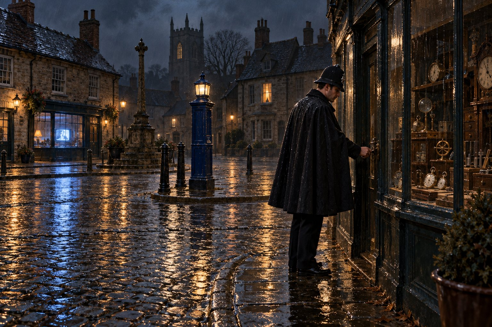

Обход

Глава первая
Вот, зима уже прошла; дождь миновал, перестал.
— Песнь песней 2:11
На построение ранней смены приходили за четверть часа до шести, и тот, кто приходил в без десяти, считался опоздавшим, даже если часы на ратуше с ним не соглашались. Констебль Э. Морс пришёл в без двадцати, потому что не спал с четырёх, а не спал он потому, что был понедельник, одиннадцатое марта тысяча девятьсот шестьдесят третьего года, и в этот день он впервые выходил на улицу констеблем, а не новобранцем. Разница между этими двумя словами состояла в тринадцати неделях Эйншем-Холла, одной смерти, одном дознании и в шлеме, который сидел на голове не совсем так, как хотелось бы.
Пять дней назад Англия впервые с Рождества проснулась без заморозков, и теперь Каршолл-Ньютаун таял со всех сторон сразу. Вода бежала по стокам, с крыш по ночам съезжали пласты снега, а вдоль тротуаров лежали серые ноздреватые валы, в которых с января вмёрзли окурки, автобусные билеты и одна детская варежка, красная, которую Морс заметил по дороге в участок и запомнил без всякой цели, как запоминал теперь всё.
Участок полиции Каршолл-Ньютауна занимал заднее крыло ратуши, и на построение выходили во двор, между гаражом и сараем с велосипедами. Констеблей ранней смены было девять, и девять человек в шлемах во дворе ратуши в синем предрассветном свете выглядели как ряд шахматных фигур перед партией, в которой никто не собирается жертвовать пешками. Инспектор прочёл вслух приказы на день: угнанный фургон с номером, пропавшая собака породы бигль, откликается на Раффи, и просьба миссис Торп с Кирпичной улицы обратить внимание на мужчину, который каждый вечер смотрит на её окна. Инспектор добавил, что миссис Торп восемьдесят два года и что мужчина этот, скорее всего, фонарщик, но просьба есть просьба. В строю никто не засмеялся. В маленьких полициях просьбы восьмидесятилетних женщин составляют заметную часть всей работы, и смеяться над ними там выходит себе дороже.
Потом инспектор раздал участки. Морсу достался третий, старый город: Рыночная площадь, Церковный переулок, Овечья улица, дворы за ними и всё, что между ними находилось. Достался он ему не одному. Инспектор объявил, что констебль Морс первые недели ходит с констеблем Тиллингом, и в строю кто-то тихо сказал «ну, повезло», и Морс так и не понял, что имелось в виду, пока не прошло довольно много времени.
Джорджу Тиллингу было лет под шестьдесят. Он был не высок, не толст, а широк, как старый шкаф, и носил седые усы того фасона, который вышел из моды вместе с газовыми фонарями. Служил он в этом городе с тридцатых годов и за это время не стал ни сержантом, ни сыщиком, ни чей-нибудь головной болью. Расспрашивать, почему так вышло, было не принято, а сам он на этот счёт ничего не рассказывал, как не рассказывает дерево, почему оно не стало кораблём. Шлем на нём сидел так, будто вырос на нём сам.
Он посмотрел на Морса снизу вверх, потому что был ниже на голову, и сказал, что слышал про Эйншем. Морс сказал, что не сомневается. Тиллинг сказал, что слышал и про Библию, и что его это не касается, а касается его только одно: умеет ли новенький ходить медленно.
— Медленно? — переспросил Морс.
— В Эйншеме вас учили ходить строем, — сказал Тиллинг. — Строем ходят на параде. А на участке ходят так, чтобы успеть всё увидеть. Две мили в час, не больше. Кто ходит быстрее, тот либо спешит домой, либо не хочет ничего замечать. Пошли.
И они пошли. Сначала через Рыночную площадь, пустую, с чёрными лужами на булыжнике и с ратушей, которая с этой стороны выглядела безобиднее, чем со двора. На углу площади стоял синий полицейский столб в рост человека, с лампой наверху, и Тиллинг, проходя мимо, похлопал его по боку, как хлопают лошадь, которая не раз вывозила. Потом по Овечьей улице, мимо булочной, из которой пахло так, что Морс сразу вспомнил, что не завтракал. Булочник вышел на порог в фартуке и сказал: «Доброе утро, Джордж». Тиллинг сказал: «Доброе, Артур. Это констебль Морс, он у нас теперь будет». Булочник посмотрел на Морса так, как смотрят на новую гирю на весах, сомневаясь в её честности, и сказал «доброе утро» и ему.
За час они прошли столько, сколько Морс один прошёл бы за четверть часа, и за этот час с Тиллингом поздоровались молочник, два разносчика газет, сторож из гаража, старуха с мопсом, сам мопс и человек в кепке, который, увидев Тиллинга, перешёл на другую сторону улицы. Тиллинг проводил его взглядом и сказал, что это Хьюитт, что он за двадцать лет не сделал ничего плохого, кроме одного раза в сорок седьмом, и что с тех пор он всегда переходит улицу, и что тот день, когда он перестанет переходить, надо будет запомнить.
В начале восьмого на Рыночной площади начали открываться лавки. Старик в чёрном жилете и нарукавниках снимал ставни с узкой витрины, за которой теснились часы: карманные, настольные, настенные, одни даже с кукушкой, и все они, теснясь, показывали одно и то же время, чего Морс в часовых лавках не видел никогда. Над дверью была вывеска со стёртыми золотыми буквами: «С. Уинч. Часы. Ремонт». Старик кивнул Тиллингу, а Тиллинг кивнул старику, и дальше дело не пошло. С булочником Тиллинг был на «ты», с мопсом тоже, а с часовщиком он был на кивок, и Морс, который запоминал теперь всё, запомнил и это.
На обратном пути, у столба, Тиллинг остановился, посмотрел на воду, бегущую по стоку в решётку, и сказал, что самое опасное время для полиции — это оттепель. Морс спросил почему. Тиллинг сказал, что зимой люди сидят по домам и терпят, а как только тает, выходят на улицу и вспоминают всё, что натерпелись. Сказал он это без всякого выражения, как сообщают прогноз погоды, и Морс не понял, шутка это или нет. Потом он узнал, что у Тиллинга эти две вещи никогда не различались.
В два часа дня, сдав смену, Морс сел в своей комнате на Вокзальной улице, снятой у вдовы с канарейкой, и понял, что у него болят ноги так, как не болели ни в армии, ни в Эйншеме, и что болят они именно от медленной ходьбы. Две мили в час. Он разулся, лёг и перед тем, как заснуть, попытался перечислить в уме все двери своего участка по порядку, как когда-то в Оксфорде перечислял корабли из второй песни «Илиады». Дверей оказалось больше, чем кораблей, и заснул он на часовой лавке, где все часы показывали одно и то же время.
Глава вторая
Кто стережет смоковницу, тот будет есть плоды ее; и кто бережет господина своего, тот будет в чести.
— Притчи 27:18
Ранние смены сменились поздними, поздние ночными, и к середине апреля Морс знал третий участок в трёх видах: утреннем, когда он пахнет хлебом и мокрым камнем, дневном, когда он пахнет всем сразу, и ночном, когда он ничем не пахнет, а только звучит. Ночной участок состоял из стука собственных ботинок, воды в трубах, часов на ратуше, которые били четверти, и кашля из открытой форточки над скобяной лавкой, всегда в одно и то же время, будто кто-то там наверху тоже стоял на посту.
Ночью двери лавок полагалось проверять руками, спереди и сзади, потому что сигнализация в Каршолл-Ньютауне была только в банке, да и та срабатывала в основном от кошек. В Эйншеме учили, что дверь надо взять за ручку, толкнуть, потянуть и идти дальше. Тиллинг делал иначе. Он клал на дверь широкую ладонь, как кладут ладонь на бок лошади, надавливал чуть-чуть и стоял так секунду-другую, а уже потом брался за ручку.
— Дверь не дёргают, — сказал он в первую же ночь. — Дверь слушают. Запертая дверь стоит как стена. А та, что прикрыта кое-как, чтобы вы подумали, что она заперта, дышит. Чуть-чуть, но дышит.
Морс положил ладонь на дверь скобяной лавки и ничего не услышал. Положил на следующую, и снова ничего. На сорок второй двери, недели через две, он вдруг почувствовал под ладонью то, о чём говорил Тиллинг: дверь слегка подалась, на толщину спичечного коробка, и вернулась обратно. Это был магазин дамских шляп, и хозяйка его, разбуженная в три часа ночи, поблагодарила констебля Морса так, что лучше бы уж её ограбили. Тиллинг стоял рядом и смотрел на неё с выражением такого терпения, что становилось ясно: за тридцать лет он слышал от неё не меньше.
Дважды за смену были точки. Так назывались назначенные место и час, где констебля ждал сержант. Констебль докладывал, что всё в порядке, а сержант расписывался в его служебной книжке под последней строчкой. Сержант Ноукс, худой, с лицом человека, которого мучает изжога, приезжал на велосипеде и читал чужие записи при фонаре так дотошно, будто искал в них орфографические ошибки. Записи Морса он в первый раз читал дольше всех, потому что их было втрое больше, чем у других, а потом сказал, что в книжку пишут то, что случилось, а не то, что виделось. Морс спросил, чем одно отличается от другого. Сержант Ноукс сказал, что тем, что одно потом читает суд, а другое сержант Ноукс в три часа ночи, и что он второе любит меньше. Расписался и уехал. Тиллинг сказал, что писать надо как пишешь, а Ноукс привыкнет. Морс писал как писал, и Ноукс привык.
Рядом с Рыночной площадью, на углу, стоял тот самый синий столб. У Тиллинга на цепочке свистка висел ключ от дверцы, за которой жил чёрный телефон прямой связи с участком. Когда участку нужен был констебль третьего участка, лампа наверху начинала мигать, и констебль обязан был это заметить, где бы он ни находился, а если не заметил, то это называлось нерадивостью и записывалось в дело. Тиллинг учил оглядываться на лампу каждый раз, когда её можно увидеть, и особенно тогда, когда кажется, что незачем. За апрель лампа мигнула один раз: нашлась собака породы бигль, которая откликалась на Раффи, и нужно было забрать её из пивной «Корона», где она наслаждалась жизнью у камина и уходить не собиралась.
Хозяин «Короны», мистер Бакстер, краснолицый и благодушный, отдал собаку и предложил констеблям по полпинты за счёт заведения. Тиллинг отказался спокойно, как отказываются от предложения, которое слышат в тысячный раз. На улице он объяснил Морсу, что констебль в форме в пивной — это не проступок, это конец, и что конец этот всегда начинается с полпинты за счёт заведения и с доброго человека за стойкой. Морс кивнул. Он запомнил это так же, как запоминал всё, и так же не придал этому особого значения.
Был и второй урок, и Тиллинг дал его в ту же ночь на Церковном переулке, у ограды кладбища, где они остановились слушать тишину.
— Ходи всегда по-разному, — сказал он. — Сегодня с площади, завтра с переулка, послезавтра дворами. Вор знает твоё расписание лучше сержанта. Сержант знает, где ты должен быть, а вор знает, где ты бываешь.
Морс заметил, что сам Тиллинг всю неделю ходил одним и тем же путём, минута в минуту, и что часы на ратуше били четверть ровно тогда, когда они сворачивали с Овечьей улицы. Он сказал это вслух, осторожно, как говорят начальнику о пятне на его галстуке. Тиллинг не обиделся. Он сказал, что его тридцать лет знает весь старый город и по нему тут сверяют часы, и что в этом тоже есть польза: констебля, которого ждут, боятся не меньше, чем того, которого не ждут. Но так можно только после тридцати лет. А первые тридцать лет надо ходить по-разному.
— Делай как я говорю, — сказал он, — а не как я хожу.
И поправил шлем, и пошёл дальше по Церковному переулку своим тридцатилетним шагом, и часы на ратуше, будто дожидавшись, пробили половину третьего. Морс посмотрел на свои часы. Шли верно и те, и другие, и Тиллинг тоже.
Глава третья
В тот день, когда задрожат стерегущие дом и согнутся мужи силы; и перестанут молоть мелющие, потому что их немного осталось; и помрачатся смотрящие в окно.
— Екклесиаст 12:3
К июню Тиллинг стал отпускать Морса одного на полсмены, а к июлю на целую, и тогда же выяснилось, что участок состоит не из дверей, а из людей, и что люди эти читают газеты. Лето тысяча девятьсот шестьдесят третьего года дало им для чтения столько, сколько не давало ни одно лето на памяти всех живущих в старом городе, включая миссис Торп. В июне военный министр Профьюмо признался, что сказал парламенту неправду, и ушёл в отставку, и всё, что потом писали газеты про то, кому именно и о чём он сказал неправду, обсуждалось на третьем участке в булочной с восьми до девяти утра и в «Короне» с одиннадцати до закрытия. Тиллинг сказал по этому поводу одну фразу: что министр лгал не хуже других, а погорел на том, что сказал это парламенту, а не жене.
Морс тогда же, в июне, понёс к Уинчу свои часы, которые стали отставать на минуту в сутки. Для констебля минута в сутки — это неделя насмешек сержанта Ноукса на точке. В лавке было тесно, темновато и громко: сто часов тикали каждые своим голосом, но в один такт, как хор, который давно поёт вместе. Уинч взял часы, поднёс к уху, потом к глазу с лупой и сказал, что масло меняли в последний раз при доброй королеве Виктории. Морс сказал, что часы отцовские. Уинч сказал, что отца его он не знает, но часы тот держал в тепле и не ронял, и за это ему можно простить остальное.
Сайласу Уинчу было лет под семьдесят. Он был маленький, сухой, с белыми длинными пальцами, и в своём чёрном жилете и нарукавниках сам походил на механизм, который кто-то очень давно завёл и оставил идти. Все часы в лавке он сверял каждое утро по сигналам точного времени по радио, шести коротким гудкам, которым в Англии верили больше, чем парламенту, и в то лето не без оснований. Потому все его часы и показывали одно время. А ещё, как сказал Тиллинг без всякого выражения, к Уинчу ходили не только с часами. К нему ходили те, кому в пятницу не хватало до четверга, и Уинч давал им до четверга и брал за это столько, сколько брали в таких случаях люди, не обременённые вывеской. Расписки он держал в сейфе в задней комнате. Тиллинг это знал, и весь старый город знал, и закона Уинч не нарушал настолько, чтобы кто-то захотел этим заняться.
Когда Морс через неделю пришёл за часами, Уинч отдал их, взял совсем немного и сказал, что теперь они будут идти верно, как констебль Тиллинг. И объяснил, что четверть века ложится спать после того, как констебль тронет его дверь, и что ни разу за четверть века не лёг позже сорока минут двенадцатого. А теперь, сказал Уинч, его дверь трогает кто-то другой, и не всегда в срок, и засыпать стало труднее. Сказал он это без упрёка, как констатируют дефект в механизме, и Морс, краснея, понял, что дефект этот он сам. Он ведь делал то, чему учил Тиллинг, и ходил по-разному.
Напротив часовой лавки, через площадь, над мануфактурным магазином олдермена, того самого, который в декабре принимал у Морса торжественное заявление, снимал квартиру мистер Дональд Фаррел. Ему было лет сорок, он служил в отделе сборов городского совета, был холост, аккуратен, вежлив и страдал бессонницей. Морс узнал об этом июльской ночью, когда из открытого окна на втором этаже его тихо окликнули и спросили, не знает ли он слова из семи букв, означающего наследника престола в какой-то из восточных стран. Морс знал. С тех пор они разговаривали через окно каждую ночную смену, не дольше минуты: кроссворд из вчерашней газеты, погода, собака Раффи, которая снова пропала.
— Я вас каждую ночь вижу, констебль, — сказал как-то Фаррел. — Констебля Тиллинга я видел пятнадцать лет, в без двадцати двенадцать, у двери Уинча. Можно было часы проверять. А вас не проверишь. Вы то в десять минут, то в полночь, то из переулка, то со двора.
Морс сказал, что так и задумано. Фаррел засмеялся и сказал, что так новенькие всегда начинают, а кончают все как Тиллинг, потому что у участка есть своя логика, и что через год он сможет сверять часы и по Морсу. Потом спросил слово из девяти букв, означающее неправду, сказанную парламенту, и сам засмеялся своей шутке и закрыл окно.
Тиллинг, когда Морс рассказал ему об этих разговорах, пожевал ус и сказал, что у человека, который по ночам смотрит в окно, всегда есть причина, и что бессонница редко бывает первой из них. Морс спросил, какая же первая. Тиллинг сказал, что обычно деньги или женщина, но с Фаррелом он не уверен, потому что женщины у Фаррела нет, а деньги есть, жалованье в совете хорошее. И добавил, что из всех жильцов площади только Фаррел никогда не заходит к Уинчу даже за батарейкой для будильника, а ходит за ней в новый город. И что такие вещи про людей констеблю знать надо, а делать с ними ничего не надо, пока сами не понадобятся.
Восьмого августа, в четверг, вскоре после трёх часов ночи, в соседнем Бакингемшире остановили почтовый поезд из Глазго, подделав сигнал, и унесли из него около двух с половиной миллионов фунтов. Машиниста ударили дубинкой. Через пять дней нашли ферму, где грабители пересидели первые дни. Она стояла совсем рядом с Оксфордом, и нашёл её не Скотленд-Ярд, а местный пастух, который знал свои поля и сообщил в полицию. Тиллинг прочёл это в газете дважды, сложил газету вчетверо и сказал, что так и бывает: люди с картами и секундомерами всё рассчитают до минуты, а ловит их потом человек, который просто знает, как должна звучать его долина.
Морс подумал, что у Тиллинга, пожалуй, на каждый случай есть фраза, как у других людей есть пословица, и что такие люди чаще других оказываются правы и реже других сами следуют своим фразам. Об этом он потом вспомнит не раз.
Глава четвёртая
Ибо пред очами Твоими тысяча лет, как день вчерашний, когда он прошел, и как стража в ночи.
— Псалом 89:5
В сентябре у Тиллинга отказали колени. Не сразу и не насовсем: просто однажды утром он спустился по лестнице участка боком, как спускаются с крутого берега, и сержант Ноукс, посмотрев на это, ничего не сказал, а через неделю в списке смен против фамилии Тиллинга стояло одно и то же: шесть — четырнадцать. Дневной обход был короче, светлее и шёл мимо лавок, которые торговали, а не спали. Тиллинг принял это так же, как принимал дождь.
— Ночью ты теперь сам, — сказал он Морсу в раздевалке, застёгивая китель. — Год отходил. Пора.
Морс сказал, что справится.
— Справишься, — согласился Тиллинг. — Только помни, о чём я тебе в апреле говорил.
Морс помнил. Он помнил вообще всё, что Тиллинг говорил с апреля, и мог бы при случае пересказать это слово в слово, но в первые же ночи без старика выяснилось, что помнить и делать — разные вещи. Пока рядом шёл Тиллинг, обход каждый раз был новым, потому что Тиллинг каждый раз решал, куда свернуть. Теперь решать приходилось самому, в одиннадцать вечера, на холоде, после того как полсмены уже позади. И решение раз за разом выходило одно и то же: оно было самым удобным.
В октябре страна, как обычно, жила своей жизнью и в Каршолл-Ньютаун заглядывала через газеты. Десятого числа в Блэкпуле на съезде консерваторов прочли письмо премьер-министра: Макмиллан из больницы сообщал, что уходит. Через девять дней премьером стал граф Хьюм, и миссис Торп, которой было восемьдесят два и которая помнила ещё старую королеву, сказала Морсу у калитки, что в её время премьеров выбирали, а не назначали по знакомству. Морс не стал объяснять ей, что премьеров никогда не выбирали, и согласился, что раньше было лучше. Пекарь Артур высказался определённее: граф так граф, лишь бы хлеб не подорожал.
Тринадцатого октября, в воскресенье, по телевизору из лондонского «Палладиума» показывали «Битлз». В «Короне» телевизор стоял над стойкой, и мистер Бакстер потом рассказывал всем желающим, что звук пришлось выкрутить до отказа, а всё равно не было слышно ничего, кроме визга. Наутро газеты писали о толпе девочек перед театром, которую полиция сдерживала до ночи, и о констеблях, потерявших в давке шлемы. Сержант Ноукс прочёл это на разводе вслух и с удовлетворением заметил, что в Каршолл-Ньютауне такого не будет никогда. Констебль Хиггс, самый молодой после Морса, спросил, откуда такая уверенность. Ноукс сказал, что здешним девочкам не на что доехать до Лондона, и это был, пожалуй, самый точный прогноз за всю его службу.
Ночи стали длинными. Смена с шести вечера до двух ночи начиналась ещё в сумерках, а к восьми над Рыночной площадью висела такая темнота, что синий столб на углу различался только по лампе. Морс выходил с развода, проверял фонарь, застёгивал накидку и шёл. Первая точка в половине восьмого у Церковного переулка, вторая в половине первого на Кирпичной. Между ними четыре часа и весь участок.
В конце октября, в одну из сред, Морс поймал себя на том, что не помнит, как прошёл Овечью улицу. Не то чтобы не проходил: проходил, и двери проверил, и в книжке была запись. Но сами эти десять минут не оставили в памяти ничего, кроме общего ощущения, что всё как вчера. Он остановился у бакалеи, посмотрел на часы и, сам не зная зачем, стал вспоминать прошлую ночь, а потом позапрошлую. В ту ночь он был у лавки Уинча в двадцать три сорок одну. Накануне без двадцати двенадцать. В понедельник примерно так же. В пятницу он задержался у паба, где выпроваживали двух фермеров, и пришёл к часовщику без четверти, и, проверяя дверь, почувствовал, что опаздывает, хотя опаздывать было некуда и не к кому.
Фаррел оказался прав. Морс ходил так же, как Тиллинг, минута в минуту, и никто его к этому не принуждал. Маршрут сложился сам, как складывается тропинка через газон, по которой каждый день проходит хотя бы один человек. Он попробовал вспомнить, когда это случилось, и не смог.
В ту же ночь он пошёл наоборот: сначала вокзал, потом площадь, потом Овечья улица. Вышло неудобно и на двадцать минут дольше, к Кирпичной он опоздал, и сержант Ноукс, мокрый и злой, расписался в его книжке молча, что было хуже любого выговора. На следующую ночь Морс пошёл по-старому. Через две ночи опять по-старому. Удобная дорога затягивала, как тёплая постель.
Уинч, конечно, ничего этого не знал. Каждую ночь в без двадцати двенадцать он слышал, как пробуют его дверь, и гасил свет. Морс видел, как гаснет полоска под ставнями задней комнаты, иногда раньше, чем он успевал отойти от двери. Однажды он задержался нарочно, минуты на две, и полоска погасла всё равно, как только он тронул ручку. Старику, похоже, было всё равно, кто именно стоит за дверью, лишь бы стоял.
За это время Морс узнал о часовщике больше, чем хотел, и почти ничего из того, что следовало. Узнавал он, как всё на участке, урывками: у пекаря, у калитки миссис Торп, в очереди на почте, где сам стоял за марками для писем в Линкольн.
У Уинча была племянница, Мейвис Пикеринг, дочь его покойной сестры. Ей было лет под тридцать, она держала маленькую парикмахерскую на Вокзальной улице, через три дома от вдовы с канарейкой, и Морс видел её почти каждое утро, когда она поднимала жалюзи. Она была вдовой, как и его хозяйка, только вдовой молодой: муж служил в авиации и разбился на учениях. Раз в неделю, по воскресеньям, она носила дяде обед в судках и уходила через полчаса. Миссис Торп считала, что Мейвис ждёт наследства. Пекарь Артур считал, что наследства нет и не будет, потому что старик всё держит в бумажках, а бумажки не наследуют. Сама Мейвис на эту тему не говорила ни с кем.
У Уинча был ученик, Ленни Коул, семнадцати лет, сын вдовы с Мельничной улицы. Он сидел в лавке с девяти до шести у окна, с лупой в глазу, и за два года научился чистить механизмы так, что старик доверял ему всё, кроме денег. Ленни был тихий, длинный, с вечно немытой шеей, и по субботам ездил в кино в соседний город, потому что в Каршолл-Ньютауне кинотеатра не было. Морс несколько раз видел его на последнем автобусе.
И был ещё Кевин Доусон, о котором Морсу рассказал сам Тиллинг, ещё летом, а потом пересказал сержант Ноукс, а потом миссис Торп, и каждый раз история становилась немного хуже. Доусону было лет двадцать, он работал на элеваторе и два года назад отсидел полгода за то, что ночью вскрыл кассу в кооперативной лавке. Взяли его наутро: он расплатился в «Короне» новенькой десятишиллинговой бумажкой, а других десятишиллинговых бумажек в тот вечер у Бакстера не было. Кроме того, все знали, что прошлой весной Доусон занимал у Уинча деньги на мотоцикл и что Уинч мотоцикл в итоге забрал за долг. С тех пор Доусон, проходя мимо лавки, плевал на тротуар. Это видели многие.
— Если с часовщиком что случится, — сказал однажды Ноукс, — первым делом к Доусону. Запомни.
Морс запомнил. Он вообще запоминал всё.
В последнюю ночь октября шёл мелкий дождь, площадь блестела под фонарями, а в окне над мануфактурной лавкой горел свет. Фаррел сидел за столом с газетой и, увидев констебля, постучал ногтем по стеклу и показал на часы. Было двадцать три сорок. Морс кивнул, проверил дверь Уинча, услышал за ней тишину, увидел, как гаснет полоска под ставнями, и пошёл дальше, к Кирпичной, где в половине первого его ждал сержант.
Уже за углом он сообразил, что Фаррел не спросил кроссворд. Он просто показал на часы, как показывают знакомому, что тот пришёл вовремя.
Глава пятая
Не хвались завтрашним днем, потому что не знаешь, что родит тот день.
— Притчи 27:1
Двадцать второе ноября пришлось на пятницу. На разводе в без четверти шесть сержант Ноукс прочёл ориентировку о краже двух велосипедов со станции, напомнил, что по пятницам у «Короны» бывает шумно, и пожаловался на изжогу, которую нажил от рыбы, купленной женой у нового торговца. Констебль Хиггс спросил, не тот ли это торговец, что приезжает по средам на синем фургоне. Ноукс сказал, что тот самый, и что фургон у него тоже подозрительный. На этом развод кончился.
В четверть седьмого Морс вышел на площадь. Было сыро и тихо, магазины закрывались, и последние покупательницы, торопясь, несли домой сетки с пятничной рыбой. В лавке Уинча ещё горел свет: Ленни Коул, ссутулившись у окна, домывал что-то в плошке, а сам Уинч в глубине прибирал инструмент. Ровно в шесть, по часам на витрине, Ленни снял нарукавники, а без пяти семь Морс, возвращаясь с Овечьей улицы, увидел, что ставни уже закрыты. Всё шло, как шло весь этот год.
Первой новость узнала, по всей видимости, жена бакалейщика, у которой в задней комнате было включено радио. Она выбежала на крыльцо в переднике и, увидев констебля, закричала через улицу, что в Америке стреляли в президента. Морс перешёл улицу. Женщина повторила то же самое и добавила, что президент ранен и его повезли в больницу, а больше по радио ничего не говорят. Был восьмой час.
Морс постоял на крыльце, слушая сквозь открытую дверь, как диктор читает одни и те же три фразы, а между ними играет музыка, и пошёл дальше, потому что ничего другого констеблю на обходе делать не полагалось. Через двадцать минут на Церковном переулке, у первой точки, его догнал сержант Ноукс на велосипеде. Он затормозил, поставил ногу на бордюр и, не слезая, расписался в книжке Морса.
— Умер, — сказал он, возвращая книжку. — Только что передали. Жена прибежала в участок, у неё телевизор.
Ноукс помолчал, глядя на тёмные окна церкви, и сказал, что видел Кеннеди один раз в кинохронике, когда тот выступал в Берлине, и что подумал тогда: молодой. Потом он сказал, что этому теперь конец, хотя чему именно, не объяснил, и уехал, неуклюже оттолкнувшись от бордюра. Морс записал в книжку время и ещё долго стоял под фонарём. Он тоже видел ту хронику. Он тоже подумал тогда: молодой.
Вечер после этого пошёл странный. В городке, где в девять вечера обычно не горело ни одного окна, кроме окон пивной, люди не ложились. Почти в каждом доме, где был телевизор, светилось голубым. Из открытых форточек доносились голоса дикторов, и Морс, проходя по Кирпичной, слышал одно и то же сообщение из трёх домов подряд, с запозданием на полслова, как эхо. Мистер Хьюитт, тот, что с сорок седьмого года переходил улицу, увидев констебля, на этот раз не перешёл, а остановился и спросил, правда ли. Морс сказал, что правда. Хьюитт кивнул, сказал «Господи» и пошёл дальше, а потом, уже у своей калитки, всё-таки обернулся и снял шляпу, неизвестно перед кем.
Потом выяснилось, что Би-би-си вскоре после сообщения о смерти вернулась к обычной программе и больше двух тысяч человек позвонили на телевидение с жалобами. В Каршолл-Ньютауне жалоб никто никуда не писал, но мистер Бакстер из «Короны» говорил потом, что тогда же выключил телевизор и включил его снова только в одиннадцатом часу, когда объявили, что вечером будет передача памяти президента.
В одиннадцать Морс проходил мимо «Короны». Пивная к тому времени закрылась, стулья в общем зале стояли на столах ножками вверх, но в маленьком зале за стойкой горел свет и мерцал экран. Морс прошёл бы мимо, если бы дверь не открылась сама. Бакстер стоял на пороге в жилетке, без пиджака, красный больше обычного.
— Зайдите, констебль, — сказал он. — Сейчас будут говорить. Премьер-министр будет говорить. Зайдите, ничего с вашей площадью за пять минут не сделается.
Морс сказал, что не может.
— Не можете, — повторил Бакстер. — Ну да. А он, значит, мог. Сорок шесть лет, и мог.
Сказано это было без всякой логики, но Морс почему-то понял, что Бакстер имеет в виду, и именно поэтому перешагнул через порог. Потом, когда его будут спрашивать, зачем он это сделал, он так и не сумеет ответить лучше. Тиллинг говорил, что констебль в форме в пивной — это конец. Тиллинг, конечно, был прав, и Морс это знал так же хорошо, как знал, сколько ступенек на лестнице к его комнате на Вокзальной улице. Но в тот вечер по всей стране люди делали то, чего никогда не делали, и Морс, которому было двадцать пять и у которого за плечами была армия, Оксфорд без степени и одна несостоявшаяся свадьба, вошёл в пивную, снял шлем и сел на табурет у стойки, держа шлем на коленях.
В маленьком зале, кроме Бакстера, была только миссис Бакстер с вязаньем, которое она так ни разу и не подняла со дня корзинки, и миска Раффи у камина, пустая, потому что Раффи давно спал. Бакстер налил констеблю чаю из чайника, стоявшего на краю стойки, и Морс выпил его, не почувствовав вкуса. Передача началась. Выступали сэр Алек Дуглас-Хьюм, новый премьер, худой и строгий, Гарольд Вильсон и Гримонд от либералов, и каждый говорил о молодости и о надежде, и о том, что мир стал меньше. Морс слушал, стараясь запомнить слова, и запомнил только, что все трое сказали в разной форме одно и то же и что у всех троих были одинаково растерянные лица, какие бывают у людей, не готовых к тому, что им придётся говорить.
Он посмотрел на часы над стойкой. Было двадцать три двадцать пять. Морс встал, надел шлем, поблагодарил за чай. Бакстер, не отрываясь от экрана, махнул рукой. Миссис Бакстер сказала ему вслед, чтобы шёл осторожно, хотя осторожнее, чем ходят констебли по пустому городку, ходить было уже некуда.
На улице стало холоднее. Морс постоял на крыльце, чтобы глаза привыкли к темноте, и пошёл по своему маршруту ровно с того места, на котором его оставил, словно ничего не случилось. Овечья улица, задний двор пекарни, переулок за банком, двери, двери, двери. Он проверял их, как учил Тиллинг, слушал каждую, и каждая молчала, как ей полагалось. В голове у него ещё звучали голоса из телевизора, и он ловил себя на том, что проверяет дверь второй раз, потому что не помнит, проверил ли первый.
У лавки Уинча он был в пять минут первого. Он записал это время в книжку потом, на Кирпичной, когда ждал сержанта, но запомнил его и так: часы на ратуше пробили полночь, когда он выходил из переулка за банком, а оттуда до лавки было ровно пять минут.
Площадь была пуста. Окна над мануфактурной лавкой олдермена не светились. Морс отметил это мимоходом: Фаррел, видно, тоже смотрел телевизор у кого-нибудь из соседей или в кои-то веки лёг спать вовремя. Он подошёл к двери часовщика, взялся за ручку, надавил. Дверь стояла как стена. Он приложил ухо. Тишина. За ставнями было темно.
Он обошёл дом с переулка, через низкую калитку во двор, и проверил заднюю дверь. Заперто. Окно рядом, с решёткой, тоже. Морс посветил фонарём на щеколду калитки, на мокрые плиты двора, на бочку с дождевой водой, на ряд пустых цветочных горшков у стены, ничего не увидел и вернулся на площадь.
Уже отходя, он подумал, что в первый раз за весь год не видел, как гаснет свет под ставнями. Мысль была короткая и простая: старик не дождался и лёг сам. Ничего удивительного в этом не было. Двадцать пять лет подряд Уинч ложился после констебля, а тут констебль опоздал на двадцать пять минут, и, может быть, впервые за двадцать пять лет старик решил, что ждать незачем. Морс даже почувствовал что-то вроде вины, как будто подвёл человека, который на него рассчитывал.
В половине первого он стоял на Кирпичной, и сержант Ноукс, подъехав, расписался в его книжке без единого слова. Морс написал над подписью: «0.05 — лавка Уинча, спереди и сзади, заперто». О «Короне» в книжке не было ничего. Писать было нечего: пивная закрыта, нарушений нет. Так он себе и сказал.
Смена кончилась в два. Морс сдал фонарь, расписался в журнале, вышел на пустую Вокзальную улицу и пошёл домой. Канарейка вдовы спала под накинутым платком. Он лёг, долго не мог уснуть и думал о Далласе, о котором до этого вечера не думал ни разу в жизни, а потом о том, что завтра в газетах будут фотографии, а потом ни о чём.
О часовщике он не подумал ни разу.
Глава шестая
И я говорил в благоденствии моем: «не поколеблюсь вовек».
— Псалом 29:7
Разбудила его хозяйка. Она стучала в дверь так, как не стучала ни разу за все восемь месяцев, что Морс у неё жил, и сквозь дверь сказала, что внизу констебль Хиггс и что на площади что-то случилось. Было без четверти одиннадцать. Канарейка пела.
Хиггс стоял в прихожей в форме, мокрый, с шлемом в руках, и потому, что он снял шлем в чужом доме, Морс понял, что дело серьёзное, ещё до того, как тот заговорил.
— Часовщик, — сказал Хиггс. — Уинч. Нашли у лестницы. Сержант велел тебя привести. Ты же ночью его проверял.
Морс оделся за три минуты, не в форму, потому что смена его начиналась только вечером, а в старое пальто, и всю дорогу до площади молчал. Думал он одно: света под ставнями не было.
У лавки собрались люди. Субботний рынок на площади всё равно открылся, но торговля шла вяло, и покупатели стояли с корзинками у верёвки, натянутой от фонарного столба к синему столбу, и говорили вполголоса сразу о двух смертях, далёкой и близкой, и не всегда по разговору было понятно, о какой из них. Миссис Торп в чёрной шляпке держала на поводке Раффи, который тянулся носом к двери часовщика. На ступеньке пекарни сидел Ленни Коул, белый как мука, и пекарь Артур стоял над ним с кружкой чая и не знал, куда её деть, потому что Ленни чай не брал.
Сержант Ноукс вышел из переулка и помахал Морсу. Во дворе за лавкой всё было так, как Морс видел в пять минут первого, только при дневном свете: бочка, горшки, мокрые плиты. В задней двери не хватало нижнего стекла, и осколки лежали внутри на коврике.
— Это я, — сказал Ноукс. — Руку просунул и открыл. Там английский замок, защёлкивается сам. Мальчишка пришёл в девять, как всегда, стучал, никто не открыл. Заглянул в окно и увидел ноги. Булочник позвонил в участок. Я приехал в девять двадцать. Доктор уже был. Из уголовного розыска едут. Когда ты тут был?
— В пять минут первого.
Ноукс кивнул, как будто это и так знал, и вдруг посмотрел на Морса внимательнее.
— В пять минут первого, — повторил он. — А Тиллинг тут всегда без двадцати. Ну ладно. Потом. Заходи, ничего не трогай.
Задняя комната была тесная и тёплая, с чугунной печкой, рабочим столом под лампой на кронштейне, двумя креслами и тёмным зелёным сейфом в углу, похожим на небольшой надгробие. Из неё вела наверх крутая узкая лестница без перил, с одним только канатом вдоль стены. У подножия лестницы лежал Сайлас Уинч.
Он лежал на боку, неудобно, одна рука под собой, другая вытянута к печке. На нём были те же чёрный жилет и нарукавники, что и днём, на ногах стоптанные домашние туфли. Очки в стальной оправе лежали в стороне, с треснувшим стеклом. Голова была повёрнута так, как живые люди её не поворачивают, и на линолеуме под виском засохло тёмное пятно, небольшое, с ладонь.
Морс посмотрел и отвёл глаза. Мёртвых он видел и прежде, но никогда ещё того, чью дверь трогал рукой прошлой ночью.
Из лавки, сквозь полуоткрытую дверь, доносилось тиканье. Днём его заглушали голоса и дверной колокольчик, а сейчас в тишине оно заполняло весь дом, сотня часов, каждые своим голосом. Они шли. Им не было дела до того, кто их завёл.
Доктор Мэйхью, полицейский врач, сидел в кресле Уинча и писал в блокноте на колене. Был он лет под шестьдесят, и на его твидовом пиджаке висели собачьи шерстинки. Он сказал, не поднимая головы, что старик сломал шею и что умер он, по всей видимости, до полуночи или вскоре после, а точнее скажут в Оксфорде после вскрытия, да и там не скажут, потому что точнее не скажет никто.
Свет в доме был выключен везде. Лампа над столом холодная, выключатель у лестницы опущен. На столе лежали разобранные карманные часы под стеклянным колпачком от пыли, аккуратно, деталь к детали, как их оставляют на ночь. На печке стоял чайник, в раковине вымытая чашка дном вверх. Старик доделал свой вечер, выключил свет и пошёл наверх в темноте, как ходят люди, знающие свою лестницу наизусть. Всё говорило одно и то же, и сказано это было так же аккуратно, как лежали детали под колпачком.
Морс посмотрел на заднюю дверь изнутри. Английский замок стоял на собачке, как его оставил Ноукс, а ниже, на уровне колена, был тяжёлый старый засов, стёртый до блеска. Засов был отодвинут.
Позади скрипнула калитка, и во двор вошёл человек в сером плаще, без шляпы, с восковой папкой под мышкой. Это был детектив-сержант Лоу из уголовного розыска, лет под сорок, с лицом человека, которого оторвали от другого, более важного дела, и который не намерен этого скрывать. Он поздоровался с Ноуксом, кивнул доктору, присел возле тела на корточки, посмотрел на лестницу снизу вверх и спросил, сколько старику было лет.
— Шестьдесят девять, — сказал Ноукс.
— Шестьдесят девять, — повторил Лоу. — Такая лестница. Без света. Сержант, вы знаете, сколько стариков в графстве каждую зиму падает с лестницы? Вот и я не знаю. Но много. Двери?
Ноукс доложил: передняя дверь заперта на ключ и на два засова, верхний и нижний, ставни снаружи на замке, задняя на английском замке, окна целы, следов взлома нет, ночью лавку проверял констебль Морс, вот он, спереди и сзади, и нашёл всё запертым.
Лоу поднял глаза на Морса.
— Во сколько?
— В ноль пять, сэр.
— Свет горел?
— Нет, сэр. Всё было темно.
— Значит, к полуночи он либо спал, либо был уже мёртв. — Лоу встал, отряхнул колени. — А обычно вы тут когда бываете?
Ноукс посмотрел в окно. Морс сказал, что обычно без двадцати двенадцать и что старик всегда гасил свет, как только констебль трогал дверь.
— А вчера почему в ноль пять?
Вопрос был задан равнодушно, между делом, и Лоу уже смотрел не на Морса, а на сейф. Морс слышал, как тикают часы в лавке. Он сказал:
— Задержался на маршруте, сэр.
Лоу кивнул и спросил Ноукса, есть ли ключи от сейфа. Больше никто о вчерашнем маршруте не спрашивал, и Морс потом долго вспоминал, что от того, что спрашивать перестали, стало не легче, а тяжелее.
Ключи нашлись в жилетном кармане Уинча, на цепочке, вместе с ключом от передней двери. Сейф был заперт. Лоу открывать его не стал, сказал, что дождётся племянницы и поверенного, и вышел во двор поговорить с учеником.
Ленни Коула привели с площади. Он рассказал то же, что и Ноуксу, слово в слово, только тише, и на вопрос, не заметил ли он чего-нибудь необычного, потряс головой. Потом он посмотрел на заднюю дверь, на разбитое стекло, и сказал, ни к кому особенно не обращаясь:
— А почему засов открыт?
Лоу спросил, что он имеет в виду. Ленни объяснил, что приходит каждое утро через заднюю дверь и каждое утро слышит, как старик отодвигает засов, потому что засов тугой, идёт со скрежетом, а потом уже щёлкает замок. Два года каждое утро. На ночь мистер Уинч всегда задвигал засов.
— Шестьдесят девять лет, — сказал Лоу, не зло. — Раз в жизни можно забыть. Вчера все про что-нибудь да забыли.
И записал что-то в свою папку.
Когда Морс вышел на площадь, толпа у верёвки разошлась и собралась снова, уже другая. Мейвис Пикеринг бежала от Вокзальной улицы в расстёгнутом пальто поверх белого парикмахерского халата, и Хиггс перехватил её у верёвки. А над мануфактурной лавкой олдермена, в окне второго этажа, стоял Дональд Фаррел в серой вязаной кофте и смотрел вниз, на людей, на верёвку, на синий столб. Увидев Морса, он кивнул ему, как кивал каждую ночь, приветливо и немного сочувственно, и отошёл от окна.
Глава седьмая
Уста правдивые вечно пребывают, а лживый язык — только на мгновение.
— Притчи 12:19
Письменные показания Морс сел писать в субботу в пять часов вечера, за столом в комнате для констеблей, над которым висел плакат о колорадском жуке. Плакат висел там с пятидесятых годов, никто в графстве колорадского жука в глаза не видел, но снимать плакат тоже никто не решался. Лоу просил написать коротко: когда проходил, что проверял, что видел. Морс написал коротко.
«22 ноября 1963 года я нес службу на пешем участке №2 в смену с 18.00 до 2.00. В 0.05 23 ноября я проверил переднюю дверь часовой мастерской и лавки мистера С. Уинча на Рыночной площади. Дверь была заперта. Света в помещении не было. Затем я проверил заднюю дверь со стороны двора. Дверь была заперта. Окна были целы. Ничего подозрительного я не заметил. На площади людей не было».
Над третьим предложением он просидел дольше, чем над всеми остальными. В 0.05 — это была правда. Что до 0.05 он двадцать пять минут сидел в запертой пивной с чашкой чая, тоже была правда, и спрашивали его только о первой. В армии сержант-инструктор в шифровальной говорил им, что в донесении не должно быть ни слова лишнего, и Морс сказал себе, что пивная — как раз лишнее. Он поставил точку, расписался и отдал лист дежурному, и только вечером, на Овечьей улице, вспомнил, что тот же сержант говорил и другое: самая опасная шифровка та, в которой все слова правильные, а одного не хватает.
Вскрытие сделали в воскресенье в Оксфорде. Патологоанатом, доктор ДеБрин, о котором доктор Мэйхью отозвался как о человеке способном, но невыносимом, написал ровно то, что Мэйхью и обещал: перелом шейных позвонков, ушиб виска, синяк на левом плече, травмы соответствуют падению с лестницы. Смерть наступила между десятью часами вечера и часом ночи. Спиртного в крови нет. Сердце для своих лет приличное. Ранений, не объяснимых падением, не обнаружено. Внизу стояла приписка от руки, которую Лоу вслух читать не стал: «Просьбу назвать время смерти точнее прошу адресовать покойному. У него часов было больше, чем у меня».
— Соответствуют, — сказал сержант Ноукс, прочитав заключение за левым плечом Лоу. — Соответствовать они могут чему угодно. Если человека толкнуть с лестницы, они тоже соответствовать будут.
Лоу сказал, что согласен, и спросил, кого именно сержант предлагает подозревать в том, что он толкнул человека с лестницы в доме, запертом спереди на два засова, а сзади на замок. Ноукс назвал Доусона. Лоу записал Доусона. Он вообще записывал всё, что ему говорили, с видом человека, который собирает чужие зонтики, чтобы потом раздать их хозяевам.
В понедельник в одиннадцать утра вскрыли сейф. Присутствовали Лоу, Мейвис Пикеринг в чёрном платье, престарелый стряпчий мистер Парджетер, у которого Уинч держал своё завещание, и констебль Морс, которого Лоу попросил у Ноукса на час, потому что Хиггс был на суде, а Тиллинг на участке. Из этого часа полчаса Морс простоял у двери задней комнаты с шлемом в руках и видел всё.
В сейфе лежали двести сорок фунтов бумажками, перетянутые резинкой, сберегательная книжка почтовой сберкассы, карманные часы с дарственной надписью от железнодорожной компании, сданные в залог и не выкупленные, обручальное кольцо в бумажке и пачка расписок, связанная бечёвкой. Лоу развязал бечёвку и стал читать вслух, не предупредив никого, и с каждой фамилией лицо мистера Парджетера становилось всё печальнее, как у человека, который узнаёт слишком много о своих клиентах.
Расписок было четырнадцать. Фермер с дальней фермы, два лавочника с площади, вдова с Мельничной улицы, сторож со склада угля, староста церковного хора, и дальше в том же роде. Суммы от пяти фунтов до ста двадцати. На некоторых рукой Уинча были приписаны проценты и даты взносов. Расписка Доусона была перечёркнута крест накрест, и поперёк написано: «Погашено. Мотоцикл «Би-эс-эй», взят в счёт долга».
В правом верхнем углу каждой расписки стоял номер, выведенный тем же мелким почерком, что и проценты, и обведённый кружком. Морс смотрел на них издалека, и номера мелькали в руках Лоу как карты у сдающего: тридцать семь, сорок, сорок один, сорок четыре. Последний был пятьдесят один, летний, сторожа угольного склада. Лоу сложил расписки обратно, постучал пачкой о стол, чтобы выровнять, и сказал, что заберёт их с собой под расписку мистера Парджетера.
— Деньги на месте, — сказал он. — Кольцо на месте. Долги на месте. Сейф открывался ключом, который висел у покойного на цепочке. Если кто-то лез в дом за деньгами, то он ушёл без них и старательно запер за собой дверь.
Мистер Парджетер кашлянул и сообщил, что, поскольку миссис Пикеринг здесь, он может сказать и о завещании, тем более что сказать немного. Завещание было составлено в сорок девятом году, и по нему всё имущество мистера Уинча, за вычетом инструментов, отходило племяннице. Инструменты полагались тому ученику, какой будет у него на момент смерти. Больше в завещании ничего не было. Мейвис Пикеринг выслушала это молча, с лицом таким неподвижным, что его невозможно было прочесть, и спросила только, когда можно будет забрать дядино тело. Через минуту она спросила ещё, кто теперь будет заводить часы. Никто не ответил.
Уже на улице, у синего столба, Лоу закурил, прикрывая спичку ладонью, и неожиданно заговорил с Морсом по-человечески, как говорят с первым, кто оказался рядом.
— Я в восемь утра в четверг должен быть в суде по делу с поджогом, — сказал он. — У меня кража скота в трёх приходах, и половина фермеров считает, что это цыгане, а другая половина считает, что первая половина. Четвёртый месяц все службы страны ищут людей с почтового поезда, и каждую неделю кто-нибудь звонит мне и говорит, что у соседа за сараем стоит новая машина. И вот старик падает с лестницы в запертом доме, с деньгами в сейфе, и констебль в полночь находит всё запертым, а сержант Ноукс хочет, чтобы это было убийство, потому что у него есть парень, который плюёт на тротуар. Скажите мне, констебль, вы там были, вы что-нибудь видели, из-за чего мне стоит оставлять коров?
Морс подумал о засове. О полоске света, которая погасла не тогда. О том, что за двадцать пять лет старик ни разу не лёг, не дождавшись констебля, а в первый же раз, когда констебль опоздал, умер. И о том, что всё это можно было объяснить одним словом «случайность», а слово «опоздал» влекло бы за собой вопрос «почему».
— Нет, сэр, — сказал он. — Ничего такого.
Лоу кивнул, как будто иного ответа не ждал, и сказал, что Доусона всё равно проверит, чтобы сержант спал спокойно, а племянницу и ученика для порядка, чтобы спал спокойно коронер, и что на том всё. Он бросил окурок в лужу, поднял воротник и пошёл к своей машине, прижимая к боку папку с четырнадцатью чужими долгами.
Морс остался у столба. Дважды за два дня его спросили прямо, и дважды он ответил так, что к ответу нельзя было придраться. В кроссвордах такие ответы называются нечестными: буквы сходятся, а смысл нет.
Глава восьмая
Лжесвидетель не останется ненаказанным, и кто говорит ложь, погибнет.
— Притчи 19:9
В понедельник после обеда на площади сняли верёвку. Лавка Уинча стояла с закрытыми ставнями, и на двери висела картонка, написанная рукой Мейвис Пикеринг: «Закрыто по случаю траура». Кто-то положил на ступеньку букетик хризантем, и миссис Торп сказала, что знает кто, но не скажет, потому что это не её дело, и уже через час весь городок знал, что хризантемы принёс сторож угольного склада, должник, чей номер был последним в пачке. Об этом тоже знал весь городок: мистер Парджетер был человеком скромным, но у него была жена.
В без четверти шесть, перед разводом, сержант Ноукс был в необычайно хорошем расположении духа, и изжога его, по его словам, отпустила. Он отвёл Морса в сторону, к доске с ориентировками.
— Лоу закрывает, — сказал он. — Не сегодня, так дня через два. Доусона он всё-таки спросит, я добился. Но теперь уже для порядка. У него свидетель.
Морс спросил, какой свидетель.
— Фаррел. Из горсовета, что над олдерменом живёт. Сам пришёл сегодня в обед, в свой перерыв, прямо сюда, и спросил, не нужно ли чего. Он в пятницу ночью сидел у окна. Он всегда у окна сидит, спать не может. Видел тебя у двери Уинча в двадцать три сорок, как обычно, видел, как у старика погас свет. Значит, старик был жив и пошёл спать, а на лестнице случилось то, что случилось. Лоу доволен. Я, признаться, тоже.
Из комнаты для констеблей доносился голос Хиггса, который рассказывал кому-то про того, кого арестовали в Далласе, а вчера застрелили прямо в полиции, на глазах у всех. Морс слышал его очень отчётливо, каждое слово, и не понимал ни одного.
В двадцать три сорок он сидел в «Короне» с чашкой чая. Нет, уже не сидел: в двадцать три двадцать пять он вышел, и в двадцать три сорок был на Овечьей улице, у заднего двора пекарни, минутах в двадцати пяти ходьбы от лавки Уинча тем путём, которым он шёл. Он знал это так же точно, как знал, что часы в «Короне» висят над стойкой, что чай был слишком сладкий и что на площади в пять минут первого не было ни души.
— А ты ещё говорил, задержался, — сказал Ноукс добродушно. — Не задержался, значит, а дважды прошёл. В срок и потом ещё раз, в ноль пять. Тиллинг так не делал. И в книжке записал только второй раз, скромник. На будущее пиши оба.
Он похлопал Морса по плечу и пошёл в дежурку читать развод. И оттого, что никто не спросил, так ли это, молчание Морса само собой превратилось в ответ «да».
На разводе он стоял в строю и слушал ориентировки: велосипеды со станции найдены в канаве, дверь в сарае на Кирпичной опять взломана, скорее всего дети. Потом развод кончился, и в комнате для констеблей, на краю стола под колорадским жуком, Морс увидел папку для коронера, оставленную Лоу. Он помедлил. Папка не была завязана, и первым листом в ней лежали его собственные показания, а вторым — показания Дональда Фаррела, напечатанные на машинке и подписанные ровным, чётким, чиновничьим почерком.
Читать чужие папки констеблю было не положено. Морс прочёл.
«В пятницу 22 ноября я находился дома в своей квартире на втором этаже дома № 4 по Рыночной площади. Из-за бессонницы я имею привычку сидеть по вечерам у окна, выходящего на площадь. В тот вечер я слушал радио и решал кроссворд. Примерно в 23.40, как и каждую ночь, я видел констебля, который проверил дверь лавки мистера Уинча. После этого свет в лавке погас, как обычно. Констебль прошёл в сторону Церковного переулка. Ничего необычного я не заметил. Вскоре после этого, примерно в 23.45, я спустился к моей соседке миссис Эйвери, владелице шляпного магазина в доме № 3, которая была расстроена известиями из Америки и просила меня зайти. Я находился у неё до начала второго часа ночи, после чего вернулся к себе и лёг».
Ниже рукой Лоу было приписано: «Миссис Эйвери подтв. Время смерти — после 23.40». И чуть ниже, видимо, для себя: «К-бль Морс — 0.05, темно. Сходится».
Сходилось всё. Это и было страшнее всего. Показания Фаррела и показания Морса лежали в папке рядом, как две стороны одной записки, и одна вторую подпирала. В показаниях Морса не было слова про двадцать три сорок, и ничто в них не мешало Фаррелу видеть то, что он видел. В показаниях Фаррела не было слова про пять минут первого, потому что в пять минут первого Фаррел сидел у миссис Эйвери, и окно его было тёмным. Морс помнил это тёмное окно. Он даже подумал тогда, что Фаррел, видно, смотрит телевизор у соседей.
Одна неправда была в этой папке, и состояла она из одного числа: двадцать три сорок. Он знал это, и знал не как догадку, а как знают собственный адрес. В двадцать три сорок у двери Уинча не было никакого констебля. И единственный человек на свете, кроме самого Фаррела, кто мог это сказать, был тем самым констеблем, который в это время не стоял у двери. Сказать это можно было только целиком: не стоял, потому что сидел в пивной.
Он закрыл папку, положил её ровно так, как она лежала, и вышел на обход.
Маршрут он в ту ночь прошёл, как ходят по чужому городу, оглядываясь на каждом углу. В двадцать три сорок он был у двери Уинча. За дверью никто не ждал его прикосновения, и свету некому было гаснуть. Над мануфактурной лавкой горело окно, и Фаррел сидел в нём с газетой, как всегда. Он поднял глаза, и Морс впервые смотрел на него иначе, чем смотрят на знакомое лицо, и всё равно не увидел ничего, кроме знакомого лица. Фаррел стукнул ногтем по стеклу, приоткрыл форточку и спросил сверху, не знает ли констебль слова: «сторож, который не спит».
Морс сказал, что не знает, и пошёл дальше. Слово он знал сразу и потом до утра не мог выбросить его из головы.
Глава девятая
Все преступления его, какие делал он, не припомнятся ему: в правде своей, которую будет делать, он жив будет.
— Иезекииль 18:22
Доусона забрали с элеватора во вторник утром, и к обеду об этом знали все, кто хоть раз проходил мимо пекарни. Забрали вежливо, без ареста, «для беседы», но в Каршолл-Ньютауне вежливость полиции никого не обманывала. Миссис Торп сказала, что так и знала. Пекарь Артур сказал, что мальчишке и так не везло. Мистер Хьюитт ничего не сказал, но в тот день переходил улицу при виде констебля с особенным достоинством.
Беседа шла два часа в комнате за дежуркой. Морс при ней не был, он спал после ночной смены, но вечером сержант Ноукс пересказал её так подробно и с такой обидой, что можно было считать, что он там был.
В пятницу вечером Доусон ездил в Абингдон, в кино, на «Самый длинный день», про высадку в Нормандии. Ездил один, на автобусе, потому что мотоцикла у него больше не было, и на этом месте его рассказа, по словам Ноукса, было такое лицо, что Лоу перестал писать и подождал. Фильм идёт три часа, и Доусон не досмотрел его. Посреди сеанса фильм остановили, в зале зажёгся свет, и зрителям объявили, что в Далласе убит президент Кеннеди.
— И вот тут, — рассказывал Ноукс, — он говорит, что из кино пошёл в пивную возле автобусной станции, а там встретил двух парней, с которыми сидел. В том смысле сидел, что там и сидел. В такой же школе для несовершеннолетних. Последний автобус он пропустил, ночевал у одного из них на полу, а домой приехал первым утренним, и на площади уже стояла верёвка. Лоу позвонил в Абингдон. И пивная подтвердила, и парни подтвердили, и мать того парня, которая в два часа ночи вышла с кочергой на шум, подтвердила громче всех. Вот так. В десять миль от площади, всю ночь, при свидетелях и при кочерге.
Он сказал это так, будто Доусон нарочно устроил себе алиби назло сержанту, и потом долго молчал, глядя в журнал нарядов.
— Это ничего не меняет, — сказал он наконец. — Старик всё равно упал сам. Лоу так и скажет коронеру. А Доусон всё равно Доусон.
Морс на это ничего не ответил. Сержант был прав трижды: Доусон всё равно был Доусоном, Лоу скажет коронеру то, что скажет, а старик упал. Непонятно было только слово «сам».
Доусона Морс встретил в тот же вечер, в десять десять, на углу у «Короны». Тот стоял под вывеской, без шапки, в кожаной куртке, которая, похоже, осталась у него единственным напоминанием о мотоцикле, и курил, глядя на закрытые ставни часовщика. Увидев констебля, он не ушёл и не сплюнул.
— Вы тоже пришли спросить, где я был? — сказал он. — В Абингдоне я был. На войне. У меня на глазах полфильма немцы наших в воде стреляли, а потом свет зажгли и сказали, что теперь по-настоящему застрелили одного. И все сидели и не знали, что теперь делать. Я это вашему сержанту три раза рассказал. Могу и вам.
Морс сказал, что спрашивать не будет. Доусон посмотрел на него с подозрением, как смотрят на собаку, которая не лает, хотя должна.
— Я его ненавидел, — сказал он, кивнув на лавку. — Это все знают, можете записать. Он мне дал денег, когда никто не давал, после школы этой. И ни слова не сказал, ни про кассу, ни про что. А потом пришёл с бумажкой и забрал машину, и тоже ни слова. Всё по бумажке. У него всё было по бумажке и по часам. Знаете, что самое паршивое? Я ему тогда пообещал, что отдам. И отдал бы. Я всего два взноса пропустил.
Он бросил окурок на мостовую и растоптал его.
— А теперь что? Теперь сержант до пенсии будет думать, что это я, только доказать не смог. И вся площадь будет думать. Раз полиция спрашивала, значит, что-то было.
Морс сказал, что старик упал с лестницы и что так и будет записано. Сказал и услышал себя со стороны. Голос был спокойный, служебный, и каждое слово в нём было правдой, и всё вместе было ложью.
Доусон пожал плечами и пошёл к станции. Шагов через десять он обернулся.
— А вы ведь тоже не верите, что он сам, — сказал он. — У вас на лице написано.
Он ушёл. Морс постоял под вывеской «Короны», из которой несло пивом и теплом, и подумал, что вот человек, который взломал кассу, отсидел своё, ненавидел покойного и говорит об этом первому встречному констеблю. А констебль, за которым нет ни кассы, ни школы для несовершеннолетних, не может сказать сержанту, где он был двадцать пять минут. Из двоих честнее выходил не он.
В двадцать три сорок он прошёл мимо лавки Уинча, тронул дверь и поднял глаза на окно над мануфактурной лавкой. Фаррел сидел там, как пришитый. На этот раз он не постучал по стеклу, а только кивнул, и Морс, сам не зная почему, кивнул в ответ.
Глава десятая
Подлинно, человек ходит подобно призраку; напрасно он суетится, собирает и не знает, кому достанется то.
— Псалом 38:7
О том, что у Мейвис Пикеринг есть ключ от задней двери дяди, Морс узнал не в участке, а за завтраком, из уст своей хозяйки. Завтракал он после ночной смены в десять, и хозяйка, подавая ему яичницу, обычно рассказывала, что случилось на Вокзальной улице, пока он спал. В среду случилось вот что: в девять утра к ней приходил детектив-сержант из уголовного розыска, сидел на кухне вот на этом стуле и спрашивал про Мейвис.
— Про Мейвис, — повторила хозяйка и поставила сковородку на плиту с таким стуком, что канарейка смолкла. — У неё, видите ли, ключ от дядиного чёрного хода. Ну естественно, у неё ключ. Она ему каждое воскресенье обед носит с тех пор, как сестра его померла, да ещё посуду за ним моет, а он ей за все десять лет часы на день рождения один раз подарил, и те подержанные. А теперь сержант спрашивает, где она была в пятницу ночью. У меня она была, вот где.
Морс отложил вилку.
В пятницу в восемь вечера, рассказала хозяйка, Мейвис прибежала к ней в чём была, в домашних туфлях, белая, потому что по радио сказали про Америку, а телевизора у Мейвис нет. Сидели вдвоём в гостиной, пили чай, ждали новостей. Мейвис плакала, потому что у президента жена молодая и дети маленькие, а её собственный муж разбился в самолёте, когда ей было двадцать три, и она всё говорила: тоже в пятницу, тоже в пятницу. В одиннадцать посмотрели передачу с премьер-министром, потом ещё посидели, и Мейвис ушла домой за полночь, в половине первого, а может, и позже, и хозяйка ещё смотрела в окно, как та дошла до своей двери, три дома направо, и как у неё зажёгся свет.
— И вы это сержанту сказали? — спросил Морс.
— Сказала. И про свет, и про чай, и про то, что ему бы стыдно должно быть. Он записал. — Хозяйка помолчала, сняла сковородку с огня и добавила уже другим голосом: — А вы-то сами в ту ночь где были, констебль? И не зашли даже на передачу посмотреть, а ведь мимо ходили.
Морс сказал, что был на службе. Хозяйка сказала, что она так и подумала, и переложила яичницу ему на тарелку.
Итак, с восьми вечера до половины первого Мейвис Пикеринг сидела в том самом доме, где Морс жил, и оплакивала не дядю, а чужого президента, и ключ от дядиного чёрного хода лежал у неё в сумочке на комоде в прихожей, в трёх шагах от канарейки. А в половине первого, когда она вышла отсюда, сам Морс стоял на Кирпичной и ждал сержанта. Третья версия за неделю рассыпалась у него в руках, и рассыпалась так же спокойно, как вторая: у всех в ту ночь были свидетели, потому что в ту ночь никто не хотел сидеть один.
Никто, подумал он, кроме старика с Рыночной площади.
В три часа дня, не выспавшись, он оделся и пошёл на площадь. Ставни часовщика были закрыты, но задняя дверь, с новым стеклом внизу, стояла приоткрытой, и внутри горел свет. Ленни Коул стоял в лавке на табуретке и заводил часы. Мейвис разрешила ему приходить каждый день, пока не решится с лавкой, и он приходил и заводил их по очереди, настенные, каминные, карманные в витрине, с таким лицом, будто кормил чужих животных, оставшихся без хозяина.
Увидев Морса без формы, он не сразу его узнал, а узнав, слез с табуретки.
— Меня сержант Лоу тоже спрашивал, — сказал он, прежде чем Морс спросил что-нибудь. — Утром. Про инструменты. Спрашивал, знал ли я, что мне инструменты останутся. Я не знал. А если бы знал? Они стоят фунтов сорок, и то если кому-нибудь нужны. А мистер Уинч меня год ещё обещал учить, и потом бы я на мастера сдал. А теперь кто меня доучит? Инструменты не учат.
Он сказал это без обиды, просто как факт, и снова полез на табуретку. В пятницу вечером он сидел дома с матерью и младшими сестрами и слушал радио, а лёг, когда мать велела, в одиннадцать, в одной комнате с двумя сестрами. Сержант Лоу это записал и больше ничего не спрашивал.
А потом Ленни, не оборачиваясь, с ключом в руке, сказал две вещи, которые не сказал Лоу, потому что Лоу о них не спрашивал.
Первая: в пятницу, когда Ленни в шесть снимал нарукавники, мистер Уинч сказал ему, чтобы не задерживался, потому что вечером к нему придут по делу. Кто и по какому делу, не сказал. По делу к нему иногда приходили вечером, через двор, и Ленни всегда знал, что это про деньги, и никогда не спрашивал.
Вторая: у мистера Уинча была чёрная книжка в клеёночку, вроде приходно-расходной, и туда он записывал, кто сколько взял и сколько вернул. Ленни сам никогда в неё не заглядывал, но видел, как старик пишет в ней по вечерам, и думал, что она в сейфе. А сержант Ноукс сказал его матери, что в сейфе были деньги, кольцо, часы и бумаги, а про книжку ничего не сказал.
Морс перебрал в памяти всё, что видел в понедельник от двери задней комнаты: бумажки под резинкой, сберкнижку, часы с дарственной надписью, кольцо в бумажке, пачку расписок. Чёрной книжки в клетку там не было.
— Когда ты видел её в последний раз? — спросил он.
Ленни подумал, держа ключ у циферблата.
— На прошлой неделе. Он что-то в ней писал и спросил меня, какое число. А потом убрал. Я не смотрел куда. Он не любил, когда смотрят.
В лавке тикала сотня часов, и все шли чуть вразнобой, потому что вот уже пятый день никто не сверял их по радио. Морс огляделся: полки, витрина, прилавок, в углу высокие напольные часы в футляре тёмного дерева с аркой наверху, самые старые в лавке. На них не было цены. Искать книжку в чужом доме без разрешения наследницы и без поручения сержанта констебль не мог, и на то, чтобы попросить поручения, у него была только одна причина, назвать которую он не мог тоже.
Он поблагодарил Ленни и вышел через двор. На площади темнело. В окне над мануфактурной лавкой света ещё не было: Фаррел сидел в своём отделе сборов и считал чужие долги по должности. Морс поймал себя на том, что впервые подумал о нём такими словами, и слова эти ему не понравились.
Глава одиннадцатая
Но это вы знаете, что, если бы ведал хозяин дома, в какую стражу придет вор, то бодрствовал бы и не дал бы подкопать дома своего.
— От Матфея 24:43
Миссис Эйвери держала шляпный магазин в доме номер три тридцать лет, и за это время женщины Каршолл-Ньютауна постепенно перестали носить шляпы, и магазин стал продавать сначала перчатки, потом платки, потом вязальную шерсть. Вывеска осталась прежняя: «Шляпки». Ей было лет под шестьдесят, жила она одна, над магазином, и каждый вечер в без четверти двенадцать выставляла на ступеньку пустую молочную бутылку с запиской для молочника. Всегда одну и всегда с запиской, хотя в записке всегда было написано одно и то же: «Одну пинту, пожалуйста».
За восемь месяцев Морс видел это раз сто и ни разу не задумался. В четверг, двадцать восьмого, он подумал об этом в первый раз, когда, отойдя от двери Уинча, увидел, как в доме номер три отворилась дверь и сухая рука в вязаном рукаве поставила на ступеньку бутылку. Без четверти двенадцать. В показаниях Фаррела тоже стояло «примерно в 23.45».
Он перешёл площадь. Миссис Эйвери ещё стояла в дверях, поправляя записку под горлышком, и увидев констебля, не испугалась, а обрадовалась, как радуются одинокие люди случайному разговору перед сном. Она сказала, что констебль, наверное, замёрз, и что теперь на площади совсем другое дело, потому что там, напротив, темно. Она так и сказала: «там темно», и кивнула на лавку часовщика, как кивают на погасший маяк.
Морс спросил, не трудно ли ей теперь засыпать. Вопрос был честный, и она ответила честно: трудно, всю неделю трудно, с той самой пятницы, и если бы не мистер Фаррел, она бы в ту ночь совсем с ума сошла одна, с такими новостями. Мистер Фаррел такой внимательный. Сам постучал, её и просить не пришлось.
— Сам? — переспросил Морс, и слово вышло громче, чем нужно.
— Сам, — сказала миссис Эйвери с удовольствием. — Вот сюда, в эту дверь, с улицы. Я ещё бутылку не успела выставить. Стоит в пальто, холодный весь, руки ледяные, я даже спросила, где вы так замёрзли, мистер Фаррел. А он говорит: да вот вышел пройтись, дома не сидится после такого, а у вас свет, дай, думаю, зайду. И сидел до часу. Я ему хересу налила, а он даже не допил. А потом ещё сказал такую странную вещь, я ещё подумала, что это он. Сказал, что констебль у Уинча нашего только что дверь проверил, как всегда. Зачем, думаю, мне это знать, в такой вечер. А наутро уж поняла зачем, бедный старик. Выходит, мистер Фаррел чуял.
Она пожелала констеблю спокойной ночи и закрыла дверь. За дверью стукнул засов. Морс несколько секунд стоял на месте, глядя на молочную бутылку, а потом поднял глаза на окно второго этажа соседнего дома. Фаррел сидел там со своей газетой. На него он смотреть не стал. Он пошёл дальше своим шагом, потому что из окна с газетой констебль должен был выглядеть как констебль, который поболтал со старушкой и пошёл.
Думал он всю дорогу до Кирпичной, и думал так, как когда-то в армии разбирал чужую телеграмму: не что в ней написано, а что нужно было тому, кто написал.
Фаррел показал, что сидел дома у окна и в двадцать три сорок видел констебля у двери Уинча. Констебля там не было. Фаррел показал, что в двадцать три сорок пять спустился к соседке, потому что она просила. Она не просила, и он не спускался, а пришёл с улицы, в пальто, с ледяными руками. И с порога, не дождавшись вопроса, сообщил одинокой женщине, которая ни о чём таком не спрашивала, что констебль только что проверил дверь Уинча.
Зачем человеку в такой вечер говорить про чужую дверь? Затем же, зачем он потом сам, без вызова, пришёл в участок в свой обеденный перерыв. В двадцать три сорок старик должен был быть жив, а с двадцати трёх сорока пяти сам Фаррел должен был сидеть с рюмкой хереса у миссис Эйвери. И всё, что случилось со стариком потом, случилось бы уже без Фаррела.
Он был умный человек, Фаррел. Он не выдумал ничего. Он просто рассказал то, что видел из окна тысячу раз: констебля в двадцать три сорок, руку на двери, гаснущую полоску света, шаги в сторону Церковного переулка. Он описал не ночь. Он описал расписание. И единственная ночь за пятнадцать лет, когда расписание сломалось, была именно та, о которой его спрашивали.
Не повезло Фаррелу, и не повезло старику. Вот всё, что можно было сказать о случае, если смотреть на него сверху, как на площадь из окна. Но Морс смотрел на него с мостовой и видел другое: старика, который двадцать пять лет ложился спать по сигналу констебльской руки. И человека в окне, который годами смотрел, как это происходит, и понял, что сигнал можно использовать. И молодого констебля, который стал этим сигналом, не заметив как, потому что так было удобнее. Тиллинг говорил ему: ходи по-разному, вор знает твоё расписание лучше сержанта. Тиллинг не сказал только, что иногда это бывает не вор.
На Кирпичной сержант Ноукс расписался в его книжке и спросил, что с ним такое, у него лицо, как у самого Ноукса после рыбы. Морс сказал, что замёрз. Ноукс сказал, что все замёрзли, и уехал.
Дальше всё было просто и невозможно, как в задаче, у которой есть ответ, но нет решения. Чтобы сказать Лоу, что Фаррел солгал про двадцать три сорок, надо было сказать, откуда это известно. Известно это было только одному человеку, и этот человек дважды сказал детектив-сержанту и один раз написал своей рукой, что ничего особенного в ту ночь не было.
А слово из кроссворда, которое он сразу знал и не сказал Фаррелу в понедельник, было «часовой».
Глава двенадцатая
Итак, кто разумеет делать добро и не делает, тому грех.
— Послание Иакова 4:17
Огород Тиллинга был за станцией, в ряду таких же узких участков вдоль насыпи, и в субботу, тридцатого ноября, в десять утра там было пусто, кроме него самого и дыма. Смена его теперь начиналась в шесть утра, но по субботам сержант Ноукс отпускал его часа на два посидеть, и Тиллинг сидел не дома, а здесь, на перевёрнутом ящике у костра из ботвы, вытянув ноги и положив ладони на колени, как кладут на больную собаку.
Морс пришёл в своём старом пальто, не спавши после ночи. Тиллинг посмотрел на него, кивнул на второй ящик и ничего не спросил. Он никогда не спрашивал первым. По его словам, всё, что человек скажет на вопрос, будет ответом на вопрос, а если подождать, человек скажет то, с чем пришёл.
Морс рассказал всё. Про «Корону», про чай, про двадцать пять минут. Про тёмную полоску под ставнями и тёмное окно Фаррела. Про отодвинутый засов и про то, что старик ждал вечером кого-то «по делу». Про папку под колорадским жуком и число двадцать три сорок. Про миссис Эйвери, пальто и ледяные руки. Про чёрную книжку, которой не было в сейфе. Рассказал по порядку, как пишут донесение, и впервые за неделю ничего не выпустил.
Тиллинг слушал, глядя в костёр. Один раз он поднял палку и подтолкнул в огонь кочанную кочерыжку, и больше не шевелился. Когда Морс замолчал, мимо прошёл товарный поезд с углем, и они оба дождались, пока пройдёт последний вагон, потому что говорить под товарный поезд бесполезно.
— Молчи, — сказал Тиллинг.
Он сказал это спокойно, без нажима, тем же голосом, каким в апреле говорил про двери, которые не дёргают, а слушают.
— Молчи, — повторил он. — Я сейчас скажу тебе почему, и ты выслушаешь, как я тебя выслушал. Первое. Ты на испытательном сроке. Два года, и прошло восемь месяцев. Констебль в форме на дежурстве в пивной после закрытия, у такого хозяина, как Бакстер. И в книжке об этом ни слова. И в показаниях детективу ни слова. За одно ты получишь выговор. За другое тебя выгонят, и будут правы. Второе. С чем ты пойдёшь? С тем, что человек вышел прогуляться в пальто? С тем, что он перепутал ночь? Он скажет: да, видимо, перепутал, вечер был такой, спасибо констеблю за бдительность. И лестница останется лестницей, и старику твоё признание уже ни важно, ни полезно. Третье.
Он замолчал и долго смотрел на костёр, как будто третье лежало там, под ботвой.
— Третье, — сказал он, — это моё расписание. Не твоё. Я пятнадцать лет трогал его дверь без двадцати двенадцать. В дождь, в снег, в сорок седьмом, когда река разлилась. И тебе говорил: ходи по-разному. А сам ходил одинаково, потому что старик ждал. Я знал, что он ждёт. Мне это нравилось, если хочешь знать. Так что если кто и научил Фаррела пользоваться стариковой привычкой, так это я, а не ты. И если кому-нибудь по правде идти к Лоу, так тоже мне. А мне идти не с чем. Я в ту ночь спал.
Из костра выстрелила искра и упала на рукав Морса. Он стряхнул её.
— Я не говорю, что ты неправ, — сказал Тиллинг. — Ты, пожалуй, прав. Я Фаррела десять лет вижу в окне и ни разу не видел, чтобы он что-нибудь сделал, не посчитав сначала. Но правота на одной ноге не стоит. У тебя одно число, которое можешь проверить только ты. И чтобы его проверить, ты должен положить себя на стол. И вот ты положил, а Лоу сказал: перепутал. И что тогда? Старик мёртв, Фаррел дома, а ты ищешь работу с армейской характеристикой и полицейской справкой, что соврал при дознании. Хорошее дело выйдет.
Хуже всего было то, что всё это была правда. Морс проверял каждое слово, как проверял двери на обходе, и все они стояли как стена. И всё же за каждым из них была тишина, и в этой тишине он слышал одно: старик двадцать пять лет сидел за дверью и ждал руки констебля, а в ту ночь рука была в «Короне» и держала чашку.
— А если я молчу, — сказал он, — то что?
— То коронер скажет «несчастный случай», — сказал Тиллинг. — Племянница продаст лавку. Мальчишка пойдёт к другому часовщику, коли возьмут. Доусон будет плевать на другие тротуары. Фаррел будет сидеть у окна и решать кроссворды. А ты через год с чем-то перейдёшь в уголовный розыск, голова у тебя для этого есть, и будешь ловить таких, как Фаррел. Много таких. И так тоже бывает. Я на службе с тридцатых годов, и я тебе скажу: каждый констебль, который дослужил до моих лет, что-нибудь такое носит с собой. Одну ночь. Одну дверь. Носит и служит. И от того, что носит, служит лучше.
Морс посмотрел на него. Тиллинг сидел на ящике старый, широкий, с ладонями на больных коленях, и на лице его не было ни хитрости, ни смущения. Была только бесконечная усталость человека, который тридцать лет знал о своём городке больше, чем хотел, и научился с этим жить. Он не уговаривал. Он просто говорил, как есть, и всё, что он говорил, было из его собственной жизни. Морс вдруг понял, что у Тиллинга есть своя дверь и своя ночь, и не стал спрашивать какие.
Прошёл второй поезд, пассажирский, в сторону Оксфорда. В окнах мелькнули лица, газеты, чья-то рука в перчатке. Морс дождался, пока станет тихо.
— Вы сказали: старику уже не важно, — сказал он. — И Лоу не важно, и коронеру. И Мейвис, наверное, тоже. Может быть, единственный человек, кому важно, — это Доусон, но и ему не очень. Никто не узнает.
Тиллинг кивнул: да, именно так.
— Узнал бы я, — сказал Морс.
Тиллинг не ответил. Он взял палку, пошевелил в костре, и из-под ботвы показался жар, красный и ровный, как лампа на синем столбе. Потом он сказал, что в таком случае идти надо не к Лоу и не к Ноуксу, а к инспектору, потому что констебль, который признаётся, признаётся начальству, а не соседу по строю. И что идти надо в форме. И что с собой надо взять книжку.
Ничего другого он в тот день не сказал, и Морс ушёл с огородов вдоль насыпи, не оборачиваясь. Дым от костра ещё долго стоял над участками прямо, потому что ветра не было.
Глава тринадцатая
Но я открыл Тебе грех мой и не скрыл беззакония моего; я сказал: «исповедаю Господу преступления мои», и Ты снял с меня вину греха моего.
— Псалом 31:5
В понедельник, второго декабря, в девять утра констебль Морс в полной форме, со служебной книжкой в нагрудном кармане, постучал в дверь инспектора и дождался «войдите».
Инспектор писал. Он всегда писал, когда к нему входили, и дописывал фразу до конца, прежде чем поднять глаза. В кабинете пахло полиролью и табаком, на стене висела карта района с участками, обведёнными красным карандашом, и второй участок, участок Морса, был на ней не больше ладони.
— Слушаю, констебль.
Морс сказал, что в ночь с двадцать второго на двадцать третье ноября, находясь на дежурстве, с двадцати трёх часов до двадцати трёх двадцати пяти он находился в помещении пивной «Корона» на Рыночной площади по приглашению хозяина, после закрытия, и смотрел телевизионную передачу. Спиртного не пил. В служебную книжку этого не записал. В письменных показаниях детектив-сержанту Лоу по делу о смерти Сайласа Уинча об этом не упомянул. На прямой вопрос сержанта Лоу о причине задержки ответил неполно. На слова сержанта Ноукса, что он прошёл лавку Уинча дважды, промолчал. В двадцать три сорок у лавки Уинча он не находился.
Он сказал это стоя, не глядя в книжку, потому что ночью выучил наизусть, и вышло короче, чем он думал. Потом сказал остальное: про показания Фаррела, про миссис Эйвери и пальто, про засов и чёрную книжку, про то, что старик ждал в тот вечер кого-то по делу. Это вышло длиннее и хуже, потому что выучить это наизусть нельзя было: это были не факты, а то, что из них следовало.
Инспектор выслушал всё, не перебивая. Потом протянул руку, и Морс не сразу понял, чего от него хотят, а поняв, отдал служебную книжку. Инспектор нашёл двадцать второе ноября, прочёл страницу, посмотрел на подпись Ноукса под строчкой «0.05» и закрыл книжку.
— Кто ещё знает?
— Констебль Тиллинг, сэр. Я ему рассказал в субботу.
— И что констебль Тиллинг?
Морс помолчал.
— Констебль Тиллинг сказал, что идти надо к вам, сэр. В форме и с книжкой.
Инспектор посмотрел на него так, что Морс понял: инспектор знает Тиллинга давно и слышит в этой фразе больше, чем в ней сказано. Он снял трубку и попросил соединить с уголовным розыском.
Пока соединяли, он сказал, не поднимая глаз:
— До решения на участок вы не выходите. Дежурная часть, дневная смена. О дисциплинарной стороне дела вам сообщат. Вы понимаете, что сделали?
— Да, сэр.
— Вы понимаете не всё, — сказал инспектор. — Вы думаете, что сделали две вещи: зашли в пивную и не сказали. Вы сделали третью. Вы девять дней давали сержанту уголовного розыска строить дело на вашем слове. А если бы на коронерском дознании вас спросили под присягой?
Морс не ответил. Ответа от него и не ждали. В трубке щёлкнуло, инспектор сказал: «Лоу? Приезжайте, есть разговор по Уинчу», — и положил трубку, и кивнул Морсу на дверь.
В коридоре стоял сержант Ноукс. Он ничего не слышал, дверь была толстая, но констебль в форме у инспектора в девять утра после ночной смены означал то же самое, что и Хиггс с шлемом в руках в чужой прихожей. Морс остановился. Он должен был несколько слов и Ноуксу тоже.
— В прошлый понедельник вы сказали, что я прошёл дважды, сэр, — сказал он. — Я прошёл один раз. В ноль пять. А до того я был в «Короне». Я должен был сказать вам тогда.
Ноукс смотрел на него долго. Лицо у него было такое, как будто изжога вернулась.
— Я тебя по плечу хлопал, — сказал он наконец. — Скромником называл. Ты стоял и слушал.
Он повернулся и постучал к инспектору. Больше он в тот день с Морсом не заговаривал, и Морс нашёл, что это верно.
Лоу приехал в одиннадцать, пробыл у инспектора сорок минут, а потом вышел в дежурную часть, где Морс переписывал в журнал потерянные вещи за ноябрь, и встал над ним.
— Вы знаете, сколько времени я потратил на Доусона? — сказал он тихо, чтобы не слышал дежурный. — И на племянницу. И на мальчишку с его инструментами. А мне нужно было одно предложение в ваших показаниях. Одно.
Морс сказал, что знает.
— Не знаете, — сказал Лоу. — Но узнаете, когда сами будете сидеть на моём месте. А вы будете, судя по всему. — Он помолчал. — Я еду к Фаррелу в совет.
Он вернулся в три часа и снова подошёл к стойке. Лицо у него было такое, что Морс догадался о результате раньше, чем тот заговорил.
Фаррел принял его в своём кабинетике в отделе сборов, предложил стул и чай, выслушал и сказал, что сержант совершенно прав и он, Фаррел, очень сожалеет. Видимо, он перепутал. Каждую ночь одно и то же, и в такой вечер легко спутать. Да, возможно, он не сидел у окна, а вышел пройтись, ему было не по себе после известий. Нет, куда именно, он не помнит: вокруг площади, к церкви. Нет, никого не встретил. Да, он неправильно написал в показаниях, что миссис Эйвери просила его зайти, просто так получилось короче, и он готов исправить. Да, он знал мистера Уинча в лицо, как и все на площади. Нет, дел с ним не имел. Сержант видел расписки из сейфа? Ну вот.
— Он спросил меня про расписки сам, — сказал Лоу. — Я про них не говорил. Про них, конечно, весь городок знает спасибо миссис Парджетер. Так что и это ничего не значит.
Он посмотрел в окно дежурки на серую улицу.
— У него теперь нет алиби с одиннадцати до без четверти двенадцать, — сказал он. — У половины графства нет алиби с одиннадцати до без четверти двенадцать. У него есть неверные показания, и он их исправил с благодарностью. У меня есть констебль, который сидел в пивной, и старушка, у которой холодные руки запомнились. Вы знаете, что мне скажет коронер?
Морс знал. Тиллинг сказал это два дня назад почти теми же словами.
— Нужна бумага, — сказал Лоу. — Одна бумажка, которая свяжет Фаррела со стариком. А в сейфе её нет. Вы там стояли и видели.
И тогда Морс, который всё утро думал только о себе, вдруг вспомнил не о себе. Он вспомнил номера в кружочках, мелькавшие в руках Лоу, как карты у сдающего.
Глава четырнадцатая
В темноте подкапываются под домы, которые днем они заметили для себя; не знают света.
— Иов 24:16
— Сорок девять, — сказал Морс.
Лоу посмотрел на него так, как смотрят на человека, который в разгар серьёзного разговора называет номер автобуса.
Морс объяснил. В пачке было четырнадцать расписок, а номера на них шли от тридцати семи до пятидесяти одного. Пятнадцать номеров на четырнадцать бумажек. Когда сержант тасовал их, Морс видел сорок восемь и потом пятьдесят. Он тогда не придал этому значения, потому что тогда ещё верил в лестницу. Может быть, сорок девятый вернул долг и забрал свою расписку. А может быть, нет. Узнать это можно было только по чёрной книжке, которой в сейфе не было.
— Которой в сейфе не было, — повторил Лоу. — И которую, значит, унёс тот, кто унёс расписку.
— Если знал о ней, сэр. Ученик два года сидел в десяти футах и не знает, куда старик её убирал. Старик не любил, когда смотрят.
Лоу подумал и посмотрел на часы над дежурной стойкой. Было три часа десять минут. В три каждый день Ленни Коул приходил заводить часы.
— Одевайтесь, — сказал Лоу. — Инспектора я возьму на себя. Племянницу тоже.
Мейвис Пикеринг выслушала их в дверях парикмахерской, с расчёской в руке, и сказала, что пожалуйста, ищите что хотите, лишь бы ничего не сломали. Помолчав, она добавила, что дядя держал все свои дела при себе и что она ни о какой книжке не слышала, а если бы слышала, то сожгла бы, и всем на площади стало бы легче. Сказала и сама испугалась, но брать слова назад не стала.
Ленни был в лавке и стоял на своей табуретке с ключом. Увидев детектива, он слез, а увидев, куда смотрит констебль, сказал, что эти часы не заводит: мистер Уинч заводил их сам, по субботам, и ключ от футляра носил при себе. Они восьмидневные. Они встали вчера.
Так оно и было. Напольные часы в углу, самые старые в лавке, стояли: стрелки показывали четверть пятого, маятник висел неподвижно за стеклом. Во всей лавке, где тикала сотня часов, эти были единственные молчащие, и потому теперь их было слышно больше всех.
Ключ нашёлся в той же связке, что и ключ от сейфа: маленький, латунный, на который в прошлый понедельник никто не обратил внимания. Лоу открыл дверцу футляра. За маятником, на дне, рядом с двумя чугунными гирями, лежала чёрная книжка в клетку с затёртыми углами.
Ленни сказал «ой» и больше ничего не сказал.
Книжку Уинч вёл так же, как собирал часы, деталь к детали. Каждый долг занимал страницу: номер в кружочке, инициалы, сумма, дата, процент, а ниже столбик взносов. Выплаченные долги были закрыты чертой и пометкой «расписка возвращена». Долги с тридцать седьмого по пятьдесят первый были открыты, и их было пятнадцать.
Страница сорок девять была исписана гуще других. «Д. Ф. Сто восемьдесят фунтов. 4 февраля 1963. Десять процентов в месяц». Дальше шли взносы, сначала ровные, потом всё меньше, потом никаких. В сентябре уже другим карандашом: «Просрочка». В октябре: «Просрочка. Говорил. Обещает». И последние две строчки, мелко, с той же аккуратностью, с какой на расписках выводились проценты:
«15.XI. Сказал: до пятницы всё, иначе сам пойду в совет, пусть там спросят, откуда у него была дыра в кассе в феврале. 22.XI. Д. Ф. в 11 веч. Расчёт».
Лоу долго смотрел на последнюю строчку. Расчёта под ней не было. Не было ни черты, ни пометки «расписка возвращена». Старик записал визит заранее, как записывают на квитанции дату готовности заказа, и до самого расчёта его часы уже не дошли.
— Десять процентов в месяц, — сказал Лоу вполголоса. — Сто двадцать в год. И чиновник из отдела сборов, у которого в феврале была дыра в кассе. Он залатал одну дыру другой, а вторая оказалась глубже первой.
Он закрыл книжку, положил её в конверт, конверт в папку, и только потом посмотрел на Морса.
— В двадцать три сорок вас у этой двери не было, — сказал он. — Это теперь в письменном виде и за вашей подписью, и никакой адвокат вас из неё не выкрутит, потому что вам эта подпись дороже всех обойдётся. Старик ждал должника в одиннадцать, это теперь его рукой. Должник в без четверти двенадцать пришёл с улицы с ледяными руками к соседке и с порога сообщил ей про констебля, которого не было. А расписки сорок девять нет ни в сейфе, ни возвращённой. Вот теперь у меня есть что нести коронеру.
Фаррела взяли в тот же вечер, в шесть, когда он возвращался из совета с портфелем и свёрнутой вечерней газетой под мышкой. Взяли вежливо, у двери мануфактурной лавки, и на этот раз вежливость полиции тоже никого на площади не обманула. В квартире его, в камине, нашли только золу, а на подоконнике сложенную вчетверо газету с кроссвордом, решённым целиком, кроме одного слова.
На допросе, как рассказал потом Ноукс, который стоял у двери, Фаррел сначала спокойно повторил про прогулку вокруг площади, а когда Лоу положил перед ним чёрную книжку, раскрытую на сорок девятой странице, долго смотрел на почерк старика и сказал, что не знал про часы. Только это: не знал про часы. Потом он сказал, что пришёл в одиннадцать просить отсрочки, что старик отказал, что старик пошёл к лестнице, чтобы показать, что разговор окончен, и что он схватил его за плечо. За левое. Про то, что было после плеча, он рассказал так, что из его рассказа нельзя было понять, толкнул он или нет, и Лоу потом сказал, что это уже вопрос для присяжных. Зато всё, что было потом, Фаррел рассказал точно, по минутам: расписка в сейфе, ключ на цепочке, сейф заперть обратно, ключ обратно в карман, свет выключить, часы на столе не трогать. Выйти через двор, замок защёлкнется сам. Засов изнутри задвинуть некому. Двадцать три тридцать восемь. Он спешил, потому что через две минуты на площади должен был появиться констебль, и оставшиеся пять минут простоял в тёмном переулке за банком, а не дождавшись шагов, решил, что пропустил их: констебль ведь не мог не прийти.
В семь вечера Фаррела вели по коридору в камеру, мимо дежурной части, где Морс дописывал журнал потерянных вещей. Фаррел увидел его через окошко и остановился, и констебль, который его вёл, почему-то не толкнул его дальше.
— Двадцать пять минут, — сказал Фаррел. В голосе его не было ни злости, ни упрёка, одно чиновничье удивление человека, у которого не сошлась смета. — Десять лет констебль приходил в двадцать три сорок. Я вам сам говорил, что вы станете таким же. И вы стали. Вы стали, я проверял. Я всё рассчитал, кроме вас.
Морс ничего не ответил. Отвечать было нечего: Фаррел сказал чистую правду, и в ней не было ничего, чем можно было бы гордиться. Фаррела повели дальше. У поворота коридора он ещё раз обернулся.
— А слово вы тогда знали, — сказал он. — Сторож, который не спит. Я видел по лицу.
Дверь в конце коридора закрылась. Морс дописал в журнал последнюю строчку за ноябрь: «Зонт дамский, чёрный, найден на автобусной остановке, владелец не установлен», и поставил точку.
Глава пятнадцатая
Всякое наказание в настоящее время кажется не радостью, а печалью; но после наученным через него доставляет мирный плод праведности.
— Послание к Евреям 12:11
Дональду Фаррелу предъявили обвинение в среду, четвёртого декабря, и в тот же день в отделе сборов городского совета началась ревизия, которая до Рождества нашла не одну дыру в кассе, а три, и все три аккуратно залатанные. Дело передали в суд присяжных. Что скажут присяжные про левое плечо и про то, что было после него, должно было стать известно не раньше весны. Лоу считал, что им хватит того, что было после: человек, у которого случайно упал старик, бежит за доктором, а не за ключом от сейфа.
На площади об этом говорили неделю. Миссис Торп сказала, что так и знала, и на этот раз ей никто не поверил. Миссис Эйвери не сказала ничего и два дня не открывала свои «Шляпки», а на третий открыла и выставила в витрину чёрный фетровый капор, который лежал у неё на складе с пятидесятых. Доусона на элеваторе неделю угощали пивом те же, кто неделю назад переходил улицу, и он пил и никому не сказал спасибо. Мистер Хьюитт, встретив на Вокзальной улице констебля Морса в штатском, замедлил шаг, подумал и улицу не перешёл.
Дисциплинарное дело констебля Морса разбирал главный констебль, десятого декабря, в восемь утра, в своём кабинете на втором этаже управления. Морс пришёл за полчаса, в вычищенной форме, и сорок минут просидел в коридоре на жёсткой скамье под портретом королевы. Когда его наконец позвали, он вошёл, стал смирно и увидел, что на столе у главного констебля, рядом с его личным делом, лежит его служебная книжка, раскрытая на двадцать втором ноября, и чёрная книжка в клетку в конверте.
Главный констебль был высокий сухой человек лет под шестьдесят с военной выправкой и ленточками на кителе, и при нём стоял суперинтендент с папкой. Суперинтендент прочёл два пункта: первый — оставление участка без уважительной причины и нахождение в форме в помещении пивной, второй — неполные и вводящие в заблуждение сведения в письменных показаниях. Морс признал оба. Главный констебль спросил, хочет ли он что-нибудь сказать. Морс сказал, что нет.
— Хорошо, — сказал главный констебль. — Тогда скажу я.
Он положил ладонь на служебную книжку.
— Вы вошли в пивную потому, что в Америке убили президента, — сказал он. — Я читал рапорт детектив-сержанта Лоу. В тот вечер половина моих людей сделала что-нибудь, чего не делает обычно, и про большинство из этого я знать не хочу. За это вы получили бы замечание от инспектора, и на этом всё. Но потом вы девять дней молчали, и не из-за президента. Из-за себя. И могли бы молчать дальше, и человек, который сидит сейчас в тюрьме, решал бы кроссворды у себя в окне. Это вы понимаете.
— Да, сэр.
— Этого мало, — сказал главный констебль. — Понимать вы умеете, это у вас в личном деле написано трижды, и дважды с неодобрением. Мне нужно, чтобы вы запомнили. Констебль без книжки — это человек в синей одежде. Книжка — единственное, что у нас есть против людей вроде Фаррела, потому что у них тоже есть книжки, и ведут они их лучше нашего. Вы видели книжку часовщика. Он записал свою смерть за неделю до того, как она пришла, с датой и часом. А в вашей книжке за ту же ночь не хватает двадцати пяти минут.
Он убрал ладонь.
— Выговор, — сказал он. — С занесением в личное дело. Испытательный срок продолжается, и на вашем месте я бы не рассчитывал, что его заметят. В следующий раз разговор будет короче. Всё.
Уже у двери, когда Морс отдавал честь, главный констебль поднял глаза от бумаг и сказал, что детектив-сержант Лоу в своём рапорте написал про констебля Морса всё, и про пивную, и про номер сорок девять, и что читать это было интересно именно в таком порядке. Больше он ничего не сказал, и Морс до самой Рыночной площади не мог решить, что это было: похвала или ещё один выговор.
У автобусной остановки на площади Каршолл-Ньютауна его ждал Тиллинг, хотя ждать его Тиллингу было незачем и на дневном обходе не полагалось. Тиллинг объяснил, что проверяет остановку, потому что с неё каждую неделю приносят зонтики. Потом спросил, что дали. Морс сказал. Тиллинг кивнул, будто так и считал, и некоторое время они стояли рядом и смотрели на лавку часовщика. Ставни были закрыты, картонку «Закрыто по случаю траура» сменила другая, агентская: «Продаётся».
— Мальчишку взял часовщик в Абингдоне, — сказал Тиллинг. — С нового года. И племянница отдала ему те длинные часы из угла. Сказала, больше их видеть не может. Он их вчера на тачке домой вез по всей площади, с маятником в одной руке.
Потом, помолчав, добавил, что сержант Ноукс спрашивал утром, приедет ли Морс сегодня на развод или его там оставили на портрет королевы смотреть. И что изжога у сержанта, судя по всему, опять прошла.
С понедельника Морса вернули на второй участок. В ту же смену, с шести вечера до двух ночи.
Глава шестнадцатая
Если Господь не созиждет дома, напрасно трудятся строящие его; если Господь не охранит города, напрасно бодрствует страж.
— Псалом 126:1
В понедельник, шестнадцатого декабря, в без четверти шесть сержант Ноукс прочёл на разводе ориентировку о краже ёлок с фермы за станцией, напомнил, что перед Рождеством у «Короны» бывает шумно, и ни словом не пожаловался на изжогу. Потом он сложил листок, посмотрел вдоль строя и сказал, что на втором участке всё по-старому, а точки по-новому: в половине девятого у вокзала и в четверть первого у церкви, а следующую неделю сержант скажет отдельно.
— И каждую неделю теперь буду говорить отдельно, — добавил он, ни на кого не глядя. — Инспектор велел. Не одному констеблю ходить по-разному.
Констебль Хиггс спросил, зачем. Ноукс сказал, чтобы Хиггсу было о чём спрашивать. На этом развод кончился.
Морс вышел на Вокзальную улицу, проверил фонарь, застегнул накидку и постоял на крыльце участка, решая, куда идти. Он понял, что за восемь месяцев службы ещё ни разу не стоял так на крыльце: сначала его вёл Тиллинг, а потом вёл маршрут. Он пошёл налево, к реке, куда на первом часу смены не ходил никогда.
Ходить по-разному оказалось труднее, чем думалось. Расписание само ложилось под ноги, и от него приходилось отворачивать на каждом углу, как отворачивают лошадь, которая сама знает дорогу домой. Но сегодня у него была ещё и другая трудность. Всю дорогу он ловил себя на том, что слушает не двери, а себя. И все двери отвечали ему одно и то же: заперто, заперто, заперто, и в каждом «заперто» ему слышалось «а ты точно здесь?».
У вокзала в половине девятого сержант Ноукс расписался в его книжке, посмотрел на записи, сделанные за два часа, и сказал, что не обязательно записывать каждую калитку. Потом подумал и сказал, что, впрочем, пусть записывает, ему не жалко, и уехал, виляя велосипедом между лужами.
На Рыночную площадь он вышел в десять минут одиннадцатого, с другой стороны, из Церковного переулка, и площадь оттуда была не похожа на себя, как знакомая комната в зеркале. Синий столб стоял слева, а не справа. В окнах «Короны» отсвечивал экран, и мистер Бакстер, снимавший стулья со столов, увидел констебля сквозь стекло, поднял руку и не стал открывать дверь. С тех пор как его самого три часа расспрашивал суперинтендент про чай после закрытия, он приглашал констеблей только взмахом руки.
Над мануфактурной лавкой олдермена окно было тёмным, и в нём висела картонка «Сдаётся». В доме номер три горел свет на втором этаже, и через час там отворится дверь и сухая рука в вязаном рукаве поставит на ступеньку бутылку с запиской. Это расписание Морс даже не пытался ничем заменить. Расписание миссис Эйвери никому не вредило.
Он подошёл к лавке часовщика. Ставни были закрыты, на них белела агентская карточка, и под ставнями не было никакой полоски, ни светлой, ни гаснущей. Морс взялся за ручку, надавил. Дверь стояла как стена. Он приложил ухо, как учил Тиллинг: дверь не дёргают, её слушают.
За дверью была тишина. Не та тишина, что бывает в запертом магазине ночью, а совсем другая. Всю осень за этой дверью, если прислушаться, едва слышно шуршала сотня часов, и Морс слышал это шуршание сто раз и ни разу не заметил, как не замечают собственное дыхание. Теперь часы стояли. Ленни Коул заводил их до пятницы, а в пятницу отдал ключ от задней двери агенту, и заводить их больше было некому. Мейвис Пикеринг так и не получила ответа на свой вопрос. Ответ оказался простым: никто.
Морс постоял у двери дольше, чем нужно. Затем обошёл дом с переулка, через низкую калитку, и проверил заднюю дверь. Заперто. В книжке он записал: «23.14 — бывш. лавка Уинча, спереди и сзади, заперто», и посмотрел на слово «бывш.» дольше, чем на всё остальное.
Дальше он пошёл не на Овечью улицу, а к церкви, и оттуда на Кирпичную, а оттуда снова к площади, и в без двадцати двенадцать никакого констебля у лавки часовщика не было, и никто из окна этого не заметил. На церковной стене висело расписание рождественских служб, и Морс, посветив на него фонарём, невольно усмехнулся: в сочельник в полночь, как каждый год. Некоторым расписаниям меняться не нужно.
В четверть первого у церкви сержант Ноукс снова расписался в его книжке, прочёл строчку про «бывш. лавку» и ничего не сказал. Уже став ногой на педаль, он вдруг задержался.
— Тиллинг просил передать, — сказал он, — что в новом году колени его на ночь уже не вернут, так чтобы ты слушал теперь сержанта. А ещё просил передать, что испытательный срок два года, а не девять месяцев. Я не знаю, что это значит. Он сказал, ты поймёшь.
Он уехал. Морс постоял у церковной ограды, слушая, как затихает велосипедный фонарь сержанта, и понял. Девять месяцев он прослужил, а испытывать его, по всей видимости, начали только теперь.
Над площадью ратушные часы пробили четверть, и кто их теперь сверяет, Морс не знал. Он поправил шлем, свернул туда, куда в это время ещё ни разу не сворачивал, и пошёл слушать двери.